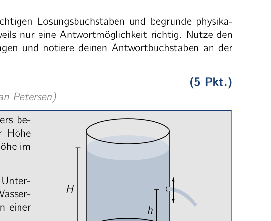
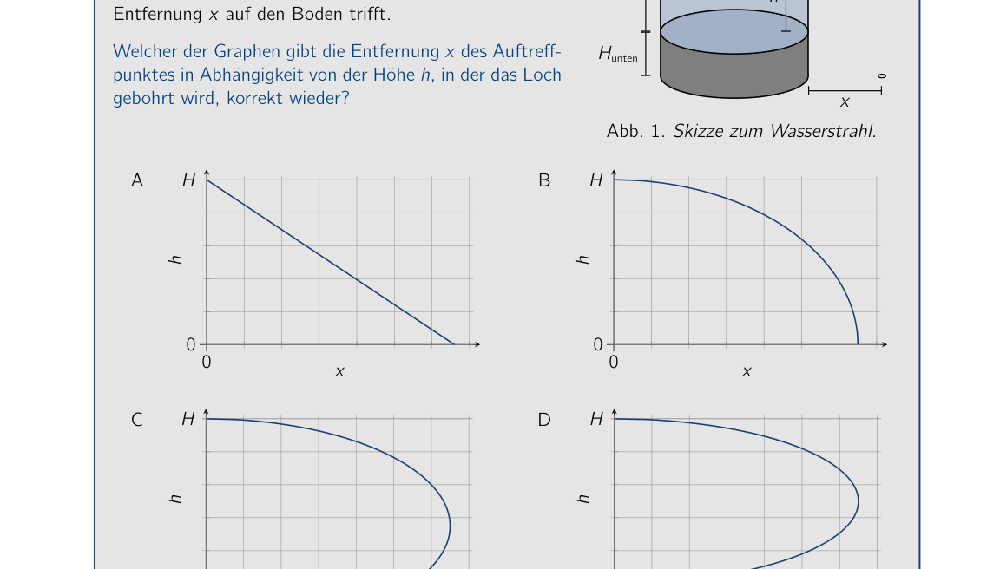
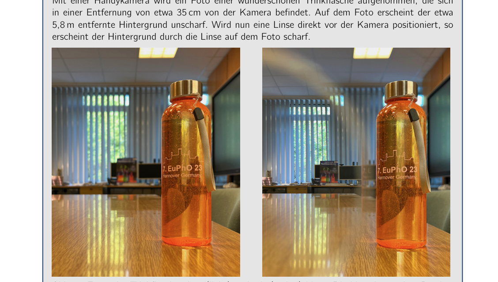
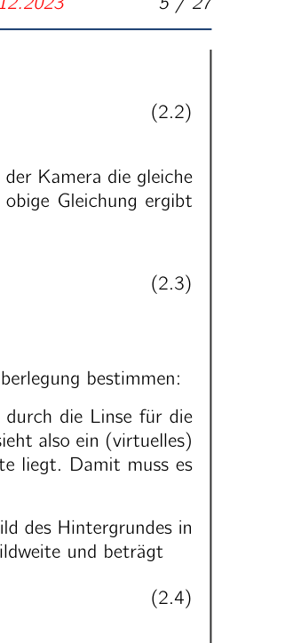
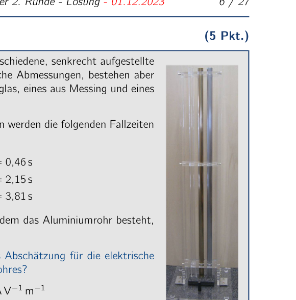
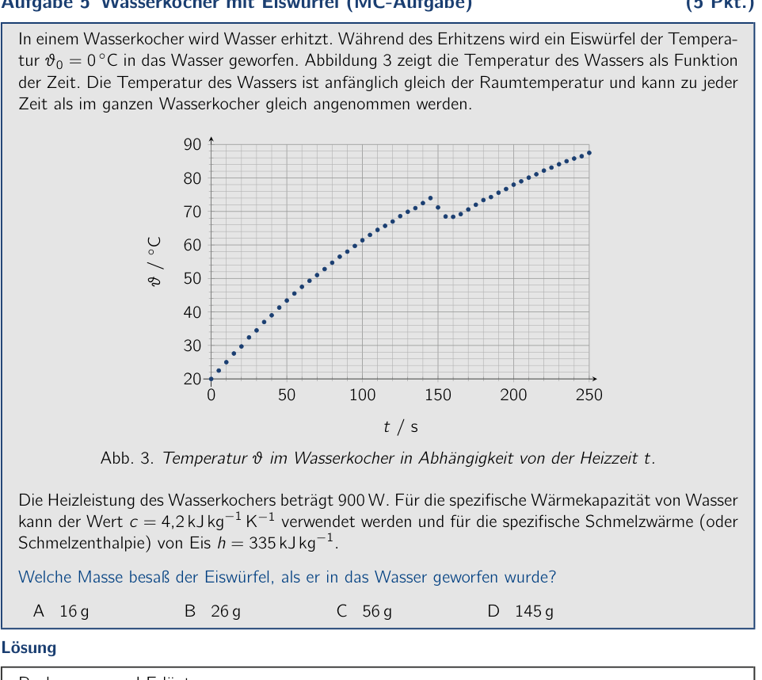
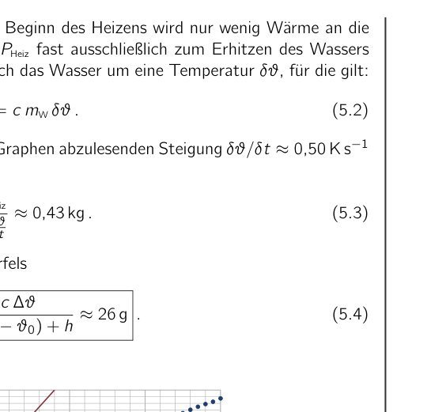
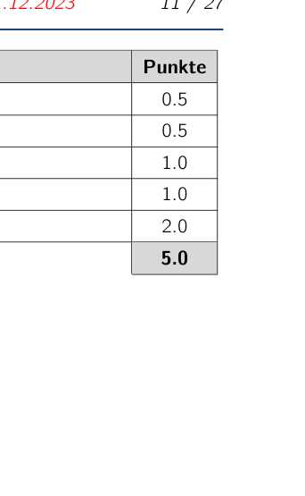
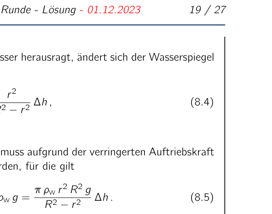

Problem 1 Water Jet (multiple-choice problem) (5 pts.) (Idea: Problem group of the PhysicsOlympiad - Stefan Petersen) The bottom of a container filled with water is located, as shown alongside, at a height of Hunten = 15 cm above the floor. The water level in the container is H = 50 cm. A small hole is now drilled into the container at a height h above the bottom, so that a water jet pours out of the container and initially strikes the floor at a distance x. Which of the graphs correctly represents the distance x of the impact point as a function of the height h at which the hole is drilled? Hunten H h x Fig. 1. Sketch of the water jet. A 0 0 H x h B 0 0 H x h C 0 0 H x h D 0 0 H x h Solution Calculations and explanations The water jet always exits horizontally from the hole. The exit velocity v of the water jet depends on the water level above the hole. Let denote 54th IPhO 2024 - 2nd Round Exam - Solution - 01.12.2023 3 / 27 the density of the water. Then, using Bernoulli’s equation, g (H ) = 1 2 v 2 or v = p 2 g (H ) . (1.1) The water jet strikes the floor at a distance x = v t, where t is the time for the free fall from the height Hunten + h. For this we have Hunten + h = 1 2 g t2 or t = s 2 (Hunten + h) g . (1.2) From this we finally obtain for the distance x of the impact point x = v t = 2 p (H ) (Hunten + h) . (1.3) With := h + Hunten this expression can be rewritten as x = 2 p (H + Hunten ) = 2 s (H + Hunten)2 4 H + Hunten 2 2 . (1.4) The expression under the square root is a quadratic function in , which becomes maximal for = H+Hunten 2 . The maximum range of the water jet is therefore reached when the hole is located at half of the total height H + Hunten, that is, at about h = H/3. This is the case only for graph C. Correct answer: C Remark: The answer options B and D arise from the derived equations for the special cases Hunten = H and Hunten = 0, respectively. Answer option A does not represent a physical solution. Marking scheme - Water Jet (multiple-choice problem) Points 1 Recognizing that the exit velocity depends on the water level above the hole and giving an expression for the velocity 1.0 Examining the free fall and giving the fall time 1.0 Deriving an expression for the distance of the impact point 1.0 Giving the correct solution 2.0 5.0 54th IPhO 2024 - 2nd Round Exam - Solution - 01.12.2023 4 / 27

Container with water and a side hole
Graphs H vs x (choices A-D)Topic: Fluid Mechanics, Newtonian Mechanics Metodi: Bernoulli’s Equation, Kinematic Equations, Conservation of Energy Competenze: Physical Reasoning, Mathematical Modeling Objects: Container, Projectile Fonte: Testo (PDF) — p.2
Problema 1 Water Jet (problema di scelta multipla) (cfr. (idea: gruppo problematico della PhysicsOlympiad - Stefan Petersen) Il fondo di un contenitore pieno di acqua è situato, come mostrato accanto, ad un’altezza di Hunten = 15 cm sopra il pavimento. Il livello di acqua nel contenitore è H = 50 cm. Un piccolo buco è ora perforato nel contenitore ad un’altezza di h sopra il fondo, in modo che un jet d’acqua versare fuori dal contenitore e inizialmente colpisce il pavimento a Distanza x. Quale dei grafici rappresenta correttamente la distanza x del punto di impatto come funzione dell’altezza h a cui il foro
- È drilled? Cani H h x Fig. 1. Sketch del jet d’acqua. A 0 0 H x h B 0 0 H x h C 0 0 H x h D 0 0 H x h Soluzione Calcoli e spiegazioni Il jet d’acqua esce sempre orizzontalmente dal buco. La velocità di uscita v del Water jet dipende dal livello dell’acqua sopra il buco. Indicare 54° IPhO 2024 - 2° Round Exam - Soluzione - 01.12.2023 3 / 27 la densità dell’acqua. Quindi, usando l’equazione di Bernoulli, g (H ) = 1 2 v 2 or v = p 2 g (H ) . (1.1) The water jet strikes the floor at a distance x = v t, where t is the time for the free
- “Fall from the height Hunten + h”. Per questo abbiamo Cani + h = 1 2 g t2 or t = s 2 (cinnoni + h) g . (1.2) Da questo finalmente otteniamo per la distanza x del punto di impatto x = v t = 2 p (H ) (inferiore + h) (1.3) With := h + Hunten this expression can be rewritten as x = 2 p (H + buca ) = 2 s (H + le mani) 2 4 H + cani 2 2 . (1.4) The expression under the square root is a quadratic function in , which becomes maximal for = H+hunt 2 . Il range massimo del jet d’acqua è quindi raggiunto quando il buco è situato a metà dell’altezza totale H + Hunt, cioè, a circa h = H/3. Questo è il caso solo per grafico C. Corretta risposta: C Nota: Le opzioni di risposta B e D derivano dalle equazioni derivate per il special cases Hunten = H e Hunten = 0, rispettivamente. Risposta opzione A non rappresenta una soluzione fisica. Schema di marcatura - Water Jet (problema di scelta multipla) Punti 1 Riconoscendo che la velocità di uscita dipende dal livello dell’acqua sopra il buco e dando un’espressione per la velocità 1.0 Examining the free fall and giving the fall time (esaminare la caduta libera e dare il tempo della caduta) 1.0 Deriving an expression for the distance of the impact point 1.0 Giving the correct solution 2.0 5.0 54° IPhO 2024 - 2° Round Exam - Soluzione - 01.12.2023 4 / 27
Container with water and a side hole
*Grafiche H vs x (a scelta A-D) *
Topic: Fluid Mechanics, Newtonian Mechanics Metodi: Bernoulli’s Equation, Kinematic Equations, Conservation of Energy Competenze: Physical Reasoning, Mathematical Modeling Objects: Container, Projectile Fonte: Testo (PDF) — p.2
The problem is that the water jet is a multiple choice problem. (five points) (Idea: Problem group of the PhysicsOlympic - Stefan Petersen) The bottom of a container filled with water is located, as shown alongside, at a height of Hunten = 15 cm above the floor. The water level in the container is H = 50 cm. A small hole is now drilled into the container at a height h above the bottom, so that a water jet pours out of the container and initially strikes the floor at a distance x. Which of the graphs correctly represents the distance x of the impact point as a function of the height h at which the hole is located. Is drilled? Hunting H h x Fig. 1. Sketch of the water jet. A 0 0 H x h B 0 0 H x h C 0 0 H x h D 0 0 H x h The solution Calculations and explanations The water jet always exits horizontally from the hole. The exit velocity v of the Water jet depends on the water level above the hole. Let indicate The Commission shall adopt implementing acts in accordance with Article 21 of Regulation (EU) No 182/2011.’ 3 / 27 the density of the water. Then, using Bernoulli’s equation, g (H ) = 1 2 v 2 or v = p 2 g (H ) . (1.1) The water jet strikes the floor at a distance x = v t, where t is the time for the free fall from the height Hunten + h. For this we have Hunting + h = 1 2 g t2 or t = s 2 (hounds + h) g . (1.2) From this we finally obtain for the distance x of the impact point x = v t = 2 p (H ) (below + h) (1.3) With := h + Hunten this expression can be rewritten as x = 2 p (H + Hunting ) = 2 s (H + Hunting) 2 4 H + Hunting 2 2 . (1.4) The expression under the square root is a quadratic function in , which becomes maximal for = H+hunt 2 . The maximum range of the water jet is therefore reached when the hole is located at half of the total height H + Hunten, that is, at about h = H/3. This is the case only for graph C. Correct answer: C Note: The answer options B and D arise from the derived equations for the The following is the list of the types of products used: Answer option A does not represent a physical solution. The following information is provided by the Commission in the field of information technology: Points 1 Recognizing that the exit velocity depends on the water level above the hole And giving an expression for the velocity 1.0 Examining the free fall and giving the fall time 1.0 Deriving an expression for the distance of the impact point 1.0 Giving the correct solution 2.0 5.0 The Commission shall adopt implementing acts in accordance with Article 21 of Regulation (EU) No 182/2011.’ 4 / 27
Container with water and a side hole
The following table shows the results of the calculation of the total number of samples:
Topic: Fluid Mechanics, Newtonian Mechanics Metodi: Bernoulli’s Equation, Kinematic Equations, Conservation of Energy Competenze: Physical Reasoning, Mathematical Modeling Objects: Container, Projectile Fonte: Testo (PDF) — p.2
Problem 2 Two Pictures (multiple-choice problem) A photo of a beautiful drinking bottle is taken with a phone camera; the bottle is located at a distance of about 35 cm from the camera. In the photo, the background, which is about 5.8 m away, appears blurred. If a lens is now placed directly in front of the camera, the background appears sharp through the lens in the photo. Fig. 2. Photos of the drinking bottle without (left) and with (right) the lens. The lens can be recognized by its rim and is located in the left part of the right-hand photo. What is the focal length of the lens? Note: Positive focal lengths denote converging lenses and negative ones diverging lenses. A about cm B about cm C about 35 cm D about 58 cm Solution Calculations and explanations In both pictures the writing on the bottle is sharp. In both cases the camera is therefore focused on it and thus on a distance of about 35 cm. For the imaging of the bottle, assuming a thin camera lens, the imaging equation holds 1 f = 1 b + 1 g , (2.1) where f is the focal length of the camera lens, b the unknown image distance of the imaging by the camera and g = 35 cm denotes the distance of the bottle from the camera. Denote the focal length of the additional lens by f . When the lens is placed directly in front of the camera, the refractive powers of the lenses add to a good approximation, and the total focal length of the two lenses together is ( 1 f + 1 f . For the imaging with the lens, therefore, with the 54th IPhO 2024 - 2nd Round Exam - Solution - 01.12.2023 5 / 27 distance = 5.8 m to the background, the imaging equation holds 1 1 1 f + 1 f = 1 f + 1 f = 1 b + 1 . (2.2) The decisive point here is that, because the camera’s focus is unchanged, the image distance is the same as in the case without the lens. Solving (2.1) for 1/b and substituting into the above equation gives for the sought focal length of the lens f = g g cm . (2.3) Thus only answer A is possible. Alternatively, the focal length can also be determined without calculation by the following reasoning: If the background can be seen sharply through the lens, it must appear to the camera through the lens at the same distance as the bottle. The camera therefore sees a (virtual) image of the background that lies about 35 cm behind the lens on the object side. Hence the lens must be a diverging lensa. Since the background is far away, at almost six meters, the image of the background forms to a good approximation in the focal plane. The focal length f is therefore equal to the image distance and amounts to f cm . (2.4) Correct answer: A aA converging lens can also produce a virtual image if the object distance is smaller than the focal length. Then the image distance, as for example with a magnifying glass, is always greater in magnitude than the object distance, which is not the case here. Marking scheme - Two Pictures (multiple-choice problem) Points 2 Formulating the imaging equation for the imaging with the camera 1.0 Using the combination of two close lenses 1.0 Using that the image distances are identical in both cases 1.0 Stating the correct solution 2.0 5.0 Alternative marking scheme Marking scheme - Two Pictures (multiple-choice problem) Points 2 Recognizing that the camera is focused on the distance of the bottle 1.0 Recognizing that the image of the background must be at the same distance 1.0 Using that the image forms in the focal plane for large object distances 1.0 Stating the correct solution 2.0 5.0 Remark: The idea for the problem goes back to the following article: Ruiz, M. J. (2019). Dioptres for a myopic eye from a photo. Physics Education, 54(6), doi.org/10.1088/1361-6552/ab3c0d. 54th IPhO 2024 - 2nd Round Exam - Solution - 01.12.2023 6 / 27

Two photos of the bottle with lens effectTopic: Geometric Optics Metodi: Thin Lens & Mirror Equation, Superposition Principle, Physical Modeling Competenze: Physical Reasoning, Mathematical Modeling Objects: Lens Fonte: Testo (PDF) — p.4
Il problema 2 Two Pictures (problema di scelta multipla) A photo of a beautiful drinking bottle is taken with a phone camera; the bottle is located at a distance of about 35 cm from the camera. In foto, sullo sfondo, che è circa A 5,8 metri, sembra confuso. Se un obiettivo viene ora posto direttamente davanti alla fotocamera, il fondo appare nitidamente attraverso il obiettivo nella foto. Fig. 2. Foto del biberone senza (sinistra) e con (destra) la lente. La lente può essere riconosciuta dal suo bordo ed è situata nella parte sinistra della foto a destra. Qual è la lunghezza focale della lente? Nota: le lunghezze focali positive indicano lenti convergenti e quelle negative divergenti. A circa cm B circa cm C circa 35 cm D circa 58 cm Soluzione Calcoli e spiegazioni In entrambi i quadri, la scrittura sulla bottiglia è acuta. In entrambi i casi la fotocamera è quindi focalizzata su di esso e quindi su una distanza di circa 35 cm. Per l’immaginamento della bottiglia, assumendo un thin camera lens, l’equazione di imaging contiene 1 f = 1 b + 1 g , (2.1) dove f è la distanza focale del lente della fotocamera, b l’inconosciuta distanza dell’immagine della fotocamera e g = 35 cm indica la distanza della bottiglia dalla fotocamera. Denote the focal length of the additional lens by f . Quando la lente è collocata direttamente di fronte alla fotocamera, i poteri refrattivi delle lenti aggiungono una buona approssimazione, e la distanza focale totale di the two lenses together è (1 f + 1 f . Per l’immaginaggio con l’obiettivo, quindi, con il 54° IPhO 2024 - 2° Round Exam - Soluzione - 01.12.2023 5 / 27 Distanza = 5,8 m al fondo, l’equazione di imaging sostiene 1 1 1 f + 1 f = 1 f + 1 f = 1 b + 1 . (2.2) Il punto decisivo è che, poiché il focus della fotocamera è invariato, la distanza dell’immagine è la stessa del caso senza l’obiettivo. Solving (2.1) for 1/b and substituting into the above equation gives per la ricerca di focal length del lente f = g g cm . (2.3) Così solo risposta A è possibile. In alternativa, la distanza focale può anche essere determinata senza calcolo con il seguente ragionamento: Se il fondo può essere visto in modo acuto attraverso la lente, deve apparire alla fotocamera attraverso la lente alla stessa distanza della bottiglia. La macchina appare quindi a (virtual) immagine dello sfondo che si trova circa 35 cm dietro la lente sul lato dell’oggetto. Quindi la lente deve essere una lente divergente. Poiché lo sfondo è lontano, a quasi sei metri, l’immagine dello sfondo si forma in una buona approssimazione nel piano focale. La distanza focale f è quindi pari alla distanza dell’immagine e quantità di f cm . (2.4) Risposta corretta: A Un obiettivo convergente può anche produrre un’immagine virtuale se la distanza dell’oggetto è inferiore alla distanza focale. Quindi la distanza dell’immagine, come per esempio con un bicchiere ingranditore, è sempre maggiore in magnitudo rispetto alla distanza dell’oggetto, che non è il caso qui. Schema di marcatura - Due immagini (problema di scelta multipla) Punti 2 Formulare l’equazione di imaging per l’imaging con la macchina fotografica 1.0 Usando la combinazione di due lenti vicine 1.0 Usando che le distanze dell’immagine sono identiche in entrambi i casi 1.0 Stating the correct solution 2.0 5.0 Schema di marcatura alternativa Schema di marcatura - Due immagini (problema di scelta multipla) Punti 2 Riconoscendo che la fotocamera è focalizzata sulla distanza della bottiglia 1.0 Riconoscendo che l’immagine dello sfondo deve essere alla stessa distanza 1.0 Usando che l’immagine si forma nel piano focale per le grandi distanze di oggetti 1.0 Stating the correct solution 2.0 5.0 Nota: L’idea del problema va indietro al seguente articolo: Ruiz, M. J. (2019). Dioptres per a occhio miope da una foto. La Commissione ha adottato una proposta di direttiva che modifica la direttiva del Consiglio relativa alla protezione dei consumatori. 54° IPhO 2024 - 2° Round Exam - Soluzione - 01.12.2023 6 / 27
Two photos of the bottle with lens effect
Topic: Geometric Optics Metodi: Thin Lens & Mirror Equation, Superposition Principle, Physical Modeling Competenze: Physical Reasoning, Mathematical Modeling Objects: Lens Fonte: Testo (PDF) — p.4
Problem 2 Two Pictures (multiple choice problem) A photo of a beautiful drinking bottle is taken with a phone camera; the bottle is located at a distance of about 35 cm from the camera. In the photo, the background, which is about 5.8 m away, appears blurred. If a lens is now placed directly in front of the camera, the background appears sharp through the lens in the photo. Fig. 2. Photos of the drinking bottle without (left) and with (right) the lens. The lens can be recognized by its rim and is located in the left part of the right-hand photo. What is the focal length of the lens? Note: Positive focal lengths denote converging lenses and negative ones diverging lenses. A about cm B about cm C about 35 cm D about 58 cm The solution Calculations and explanations In both pictures the writing on the bottle is sharp. In both cases the camera is therefore focused on it and thus on a distance of about 35 cm. For the imaging of the bottle, assuming a thin camera lens, the imaging equation holds 1 f = 1 b + 1 g , (2.1) where f is the focal length of the camera lens, b the unknown image distance of the imaging by the camera and g = 35 cm denotes the distance of the bottle from the camera. Denote the focal length of the additional lens by f . When the lens is placed directly in front of the camera, the refractive powers of the lenses add to a good approximation, and the total focal length of the two lenses together is (1 f + 1 f . For the imaging with the lens, therefore, with the The Commission shall adopt implementing acts in accordance with Article 21 of Regulation (EU) No 182/2011.’ 5 / 27 distance = 5.8 m to the background, the imaging equation holds 1 1 1 f + 1 f = 1 f + 1 f = 1 b + 1 . (2.2) The decisive point here is that because the camera’s focus is unchanged, the image distance is the same as in the case without the lens. Solving (2.1) for 1/b and substituting into the above equation gives for the sought focal length of the lens f = g g cm . (2.3) So only answer A is possible. Alternatively, the focal length can also be determined without calculation by the following reasoning: If the background can be seen sharply through the lens, it must appear to the camera through the lens at the same distance as the bottle. The camera therefore sees a (virtual) image of the background that lies about 35 cm behind the lens on the object side. Hence the lens must be a diverging lens. Since the background is far away, at almost six meters, the image of the background forms to a good approximation in the focal plane. The focal length f is therefore equal to the image distance and amounts to f cm . (2.4) Correct answer: A aA converging lens can also produce a virtual image if the object distance is smaller than the focal length. Then the image distance, as for example with a magnifying glass, is always greater in magnitude than the object distance, Which is not the case here. Marking scheme - Two Pictures (multiple choice problem) Points 2 Formulation of the imaging equation for the imaging with the camera 1.0 Using the combination of two close lenses 1.0 Using that the image distances are identical in both cases 1.0 Stating the correct solution 2.0 5.0 Alternative marking scheme Marking scheme - Two Pictures (multiple choice problem) Points 2 Recognizing that the camera is focused on the distance of the bottle 1.0 Recognizing that the image of the background must be at the same distance 1.0 Using that the image forms in the focal plane for large object distances 1.0 Stating the correct solution 2.0 5.0 Remark: The idea for the problem goes back to the following article: Ruiz, M. J. (2019). Dioptres for a Myopic eye from a photo. The Commission has also adopted a proposal for a regulation on the protection of the environment. The Commission shall adopt implementing acts in accordance with Article 21 of Regulation (EU) No 182/2011.’ 6 / 27
Two photos of the bottle with lens effect
Topic: Geometric Optics Metodi: Thin Lens & Mirror Equation, Superposition Principle, Physical Modeling Competenze: Physical Reasoning, Mathematical Modeling Objects: Lens Fonte: Testo (PDF) — p.4
Problem 3 Magnetic fall (multiple-choice problem) (5 pts.) A cylindrical magnet is dropped through three different vertically mounted tubes. The tubes have identical dimensions but are made of different materials - one of Plexiglas, one of brass and one of aluminium. For a fall distance of L = 1.0 m in the tubes, the following fall times of the magnet are measured: Plexiglas tPlexiglas = 0.46 s Brass tBrass = 2.15 s Aluminium tAluminium = 3.81 s The electrical conductivity of the material the aluminium tube is made of is . Which value follows from the fall times as an estimate for the electrical conductivity of the material of the brass tube? A B C D Solution Calculations and explanations When the magnet falls inside one of the metal tubes, eddy currents are induced in the tube, which in turn produce a magnetic field that opposes the magnet’s magnetic field and brakes it. By the law of induction, the voltage induced by the magnet in horizontal cross-sections of the tube is proportional to the change of the magnetic flux through the cross-section under consideration. This is proportional to the speed of the magnet. The electrical power P dissipated in a tube cross-section equals the square of the voltage U induced along the cross-section divided by the resistance of the tube cross-section: P = . Now U is proportional to the mean fall speed , and P corresponds to the total energy m g L dissipated during the fall divided by the fall time t. Together this yields a proportionality of t to 1/R and hence to . It follows that for the conductivity of the material of the brass tube . (3.1) Correct answer: B 54th IPhO 2024 - 2nd Round Exam - Solution - 01.12.2023 7 / 27 Marking scheme - Magnetic fall (multiple-choice problem) Points 3 Recognising the eddy-current braking 0.5 Recognising that the induced voltage is proportional to the fall speed 1.0 Expressing the power in terms of voltage and resistance or conductivity 0.5 Deriving a proportionality between the fall time and the conductivity 1.0 (may also be awarded if only a “the more, the more” relationship is recognised) Stating the correct solution 2.0 5.0 54th IPhO 2024 - 2nd Round Exam - Solution - 01.12.2023 8 / 27

Vertical tubes for the falling magnetTopic: Electromagnetic Induction, Magnetism Metodi: Faraday’s Law of Induction, Dimensional Analysis, Physical Modeling Competenze: Physical Reasoning, Estimation & Approximation Objects: Magnet, Tube, Cylinder Fonte: Testo (PDF) — p.6
Problema 3 Casso magnetico (problema di scelta multipla) (cfr. Un magnete cilindrico è dropped through three different vertically mounted
- Tubi. I tubi hanno dimensioni identiche ma sono fatti di diverse materie - uno di plexiglas, uno di brass e uno di di alluminio. Per una distanza di caduta di L = 1,0 m in the tubes, the following fall times di magneto sono misurati: Cose di plastica tPlexiglas = 0,46 s Fabbricazione di calcio tBrass = 2,15 s Alumini tAluminio = 3,81 s La conductività elettrica del materiale di cui è fatta la tuba in alluminio is . Which value follows from the fall times as an estimate for the electrical conductivity of the material of the brass tube? A B C D Soluzione Calcoli e spiegazioni Quando il magnete cade all’interno di uno dei tubi metallici, correnti eddy sono indotte nel tubo, che producono un campo magnetico che opponga il campo magnetico del magnete e
- Non è così. Per la legge di induzione, la tensione indotta dal magnete in sezioni orizzontali del tubo è proporzionale al cambiamento del flusso magnetico attraverso la sezione trasversale sotto
- la considerazione. Questo è proporzionale alla velocità del magnete. La potenza elettrica P dissipato in un tubo cross-section equals il quadrato del tensione U indotta lungo la sezione trasversale divisa dalla resistenza della sezione trasversale del tubo: P = . Ora U è proporzionale alla velocità media di caduta , e P corrisponde alla velocità di caduta media . L’energia totale m g L dissipatata durante il caso diviso dal tempo di caso t. Insieme questo produce una proporzionalità di t a 1/R e quindi a . Si segue che per la conductività del materiale del tubo di rame . (3.1) Risposta corretta: B 54° IPhO 2024 - 2° Round Exam - Soluzione - 01.12.2023 7 / 27 Schema di marcatura - caso magnetico (problema di scelta multipla) Punti 3 Riconoscendo il braking eddy-current 0.5 Riconoscendo che la tensione indotta è proporzionale alla velocità di caduta 1.0 Esprimendo la potenza in termini di voltage e resistenza o conductività 0.5 Deriving a proporzionality between the fall time and the conductivity 1.0 (potrebbe essere conferito se solo una relazione “il più, il più” è riconosciuta) Stating the correct solution 2.0 5.0 54° IPhO 2024 - 2° Round Exam - Soluzione - 01.12.2023 8 / 27
Vertical tubes for the falling magnet
Topic: Electromagnetic Induction, Magnetism Metodi: Faraday’s Law of Induction, Dimensional Analysis, Physical Modeling Competenze: Physical Reasoning, Estimation & Approximation Objects: Magnet, Tube, Cylinder Fonte: Testo (PDF) — p.6
The following is the list of the problems: (five points) A cylindrical magnet is dropped through three different vertically mounted
- You know what? The tubes have identical dimensions but are made of different materials - one of plexiglass, one of brass and one of aluminium. For a fall distance of L = 1.0 m in the tubes, the following fall times of the magnet are measured: Other, of a thickness of not more than 10 mm The following table shows the results of the calculation: Other, of a kind used for the manufacture of goods tBrass = 2.15 s Aluminium The value of the product shall be calculated on the basis of the following data: The electrical conductivity of the material the aluminium tube is made of is . Which value follows from the fall times as an estimate for the electrical conductivity of the material of the brass tube? A B C D The solution Calculations and explanations When the magnet falls inside one of the metal tubes, eddy currents are induced in the tube, which In turn, they produce a magnetic field that opposes the magnet’s magnetic field and Brakes it. By the law of induction, the voltage induced by the magnet in horizontal cross-sections of the tube is proportional to the change of the magnetic flux through the cross-section under The Commission will take the necessary measures. This is proportional to the speed of the magnet. The electrical power P dissipated in a tube cross-section equals the square of the voltage U induced along the cross-section divided by the resistance of the tube cross-section: P = . Now U is proportional to the mean fall speed , and P corresponds to the Total energy m g L dissipated during the fall divided by the fall time t. Together this yields a proportionality of t to 1/R and hence to . It follows that for the conductivity of the material of the brass tube . (3.1) Correct answer: B The Commission shall adopt implementing acts in accordance with Article 21 of Regulation (EU) No 182/2011 of the European Parliament and of the Council [3]. 7 / 27 The following information is provided by the Commission in the field of information technology: Points 3 Recognizing the eddy-current braking 0.5 Recognizing that the induced voltage is proportional to the fall speed 1.0 Expressing the power in terms of voltage and resistance or conductivity 0.5 Deriving a proportionality between the fall time and the conductivity 1.0 (may also be awarded if only a “the more, the more” relationship is recognised) Stating the correct solution 2.0 5.0 The Commission shall adopt implementing acts in accordance with Article 21 of Regulation (EU) No 182/2011 of the European Parliament and of the Council [3]. 8 / 27
Vertical tubes for the falling magnet
Topic: Electromagnetic Induction, Magnetism Metodi: Faraday’s Law of Induction, Dimensional Analysis, Physical Modeling Competenze: Physical Reasoning, Estimation & Approximation Objects: Magnet, Tube, Cylinder Fonte: Testo (PDF) — p.6
Problem 4 Power of wind turbines (multiple-choice problem) (5 pts.) Wind turbines generate electrical power by using energy from the wind to drive generators. At a moderate wind speed, the power made available by the wind to a turbine, and thus the theoretically maximum usable power, is P. What power is made available by the wind to the turbine if the wind speed is doubled? A 2 P B 3 P C 4 P D 8 P Solution Calculations and explanations It is assumed that the density of the air does not change. When the wind speed is doubled, a fixed mass of air has four times the kinetic energy, since this scales with the square of the speed. In addition, in the same time twice the mass of air passes through the area swept by the blades. So if all other parameters remain identical, the power is eight times the original, and answer D is correct. Remark: The dependence of the wind power on the third power of the wind speed is part of Betz’s law, which describes the upper limit for the usable power of wind turbines. Correct answer: D Marking scheme - Power of wind turbines (multiple-choice problem) Points 4 Using the kinetic energy of the air mass 1.0 Recognizing that the kinetic energy is four times as large 1.0 Recognizing that twice the mass of air flows through the turbine 1.0 Stating the correct solution 2.0 5.0 54th IPhO 2024 - 2nd Round Exam - Solution - 01.12.2023 9 / 27

Photo of a wind turbineTopic: Fluid Mechanics, Conservation of Energy Metodi: Conservation of Energy, Dimensional Analysis Competenze: Physical Reasoning, Mathematical Modeling Objects: — Fonte: Testo (PDF) — p.8
Il problema 4 Potenza delle turbine eoliche (problema di scelta multipla) (cfr. Turbine a vento generare energia elettrica utilizzando energia dal vento per generatori di motore. A moderata velocità del vento, la potenza resa disponibile da il vento verso una turbina, e quindi la potenza usable teoricamente massima, è P. Che potenza è resa disponibile dal vento alla turbina se la velocità del vento è raddoppiata? A 2 P B 3 P C 4 P D 8 P Soluzione Calcoli e spiegazioni Si presume che la densità dell’aria non cambie. Quando la velocità del vento è raddoppiata, una massa fissa di aria ha quattro volte la kinetica energia, dal momento che questo si scala con il quadrato della velocità. Inoltre, allo stesso tempo, il doppio della massa di aria passa attraverso il Area spazzato dalle lame. Quindi se tutti gli altri parametri restano identici, la potenza è otto volte l’originale, e la risposta D è corretta. Nota: La dipendenza della potenza del vento dalla terza potenza della velocità del vento è parte della legge di Betz, che descrive il limite superiore per la potenza utilizzabile delle turbine eoliche. Risposta corretta: D Schema di marcatura - Potenza delle turbine eoliche (problema di scelta multipla) Punti 4 Usando l’energia cinetica dell’aria 1.0 Riconoscendo che l’energia cinetica è quattro volte più grande 1.0 Riconoscendo che due volte la massa di aria scorre attraverso la turbina 1.0 Stating the correct solution 2.0 5.0 54° IPhO 2024 - 2° Round Exam - Soluzione - 01.12.2023 9 / 27
Foto di una turbina a vento
Topic: Fluid Mechanics, Conservation of Energy Metodi: Conservation of Energy, Dimensional Analysis Competenze: Physical Reasoning, Mathematical Modeling Objects: — Fonte: Testo (PDF) — p.8
The power of wind turbines (multiple choice problem) (five points) Wind turbines generate electrical power by using Energy from the wind to drive generators. At a moderate wind speed, the power made available by the wind to a turbine, and thus the theoretically maximum usable power, is P. What power is made available by the wind to the turbine if the wind speed is doubled? A 2 P B 3 P C 4 P D 8 P The solution Calculations and explanations It is assumed that the density of the air does not change. When the wind speed is doubled, a fixed mass of air has four times the kinetic energy, since this scales with the square of the speed. In addition, at the same time twice the mass of air passes through the Area swept by the blades. So if all the other parameters remain identical, the power is eight times the original, and answer D is correct. Note: The dependence of wind power on the third power of wind speed is part of Betz’s law, which describes the upper limit for the usable power of wind turbines. Correct answer: D Marking scheme - Power of wind turbines (multiple choice problem) Points 4 Using the kinetic energy of the air mass 1.0 Recognizing that the kinetic energy is four times as large 1.0 Recognizing that twice the mass of air flows through the turbine 1.0 Stating the correct solution 2.0 5.0 The Commission shall adopt implementing acts in accordance with Article 21 of Regulation (EU) No 182/2011 of the European Parliament and of the Council [3]. 9 / 27
Photo of a wind turbine
Topic: Fluid Mechanics, Conservation of Energy Metodi: Conservation of Energy, Dimensional Analysis Competenze: Physical Reasoning, Mathematical Modeling Objects: — Fonte: Testo (PDF) — p.8
Problem 5 Kettle with an ice cube (multiple-choice problem) (5 pts.) Water is heated in a kettle. During the heating, an ice cube at temperature is dropped into the water. Figure 3 shows the temperature of the water as a function of time. The temperature of the water is initially equal to room temperature and can be assumed to be the same throughout the entire kettle at any time. 50 100 150 200 250 30 40 50 60 70 80 90 0 20 t / s / C Fig. 3. Temperature in the kettle as a function of the heating time t. The heating power of the kettle is 900 W. For the specific heat capacity of water the value can be used, and for the specific heat of fusion (or enthalpy of fusion) of ice . What was the mass of the ice cube when it was dropped into the water? A 16 g B 26 g C 56 g D 145 g Solution Calculations and explanations A clear drop in temperature can be seen in the curve from about 145 s onward. At this time the ice cube was evidently dropped into the water. The mass of the ice cube can be determined from the drop in temperature. Denote by mEis the mass of the ice cube and by mW the likewise unknown mass of the water that is initially in the kettle. From the graph, a water temperature of can be read off for the time . Comparing this temperature with the continuation of the heating curve without the addition of the ice cube (cf. Fig. 4), a temperature difference between the two curves of can be seen. The energy released as the water cools by this temperature is used to melt the ice cube and to heat the resulting meltwater up to the temperature . Therefore: c mW = c
- h
mEis . (5.1) To determine the still-unknown mass mW of the water, the behavior of the heating curve 54th IPhO 2024 - 2nd Round Exam - Solution - 01.12.2023 10 / 27 at small temperatures can be examined. At the start of the heating, only little heat is given off to the surroundings, so that the heating power PHeiz is used almost exclusively to heat the water. In a small time the water warms by a temperature , for which: PHeiz = c mW . (5.2) Using the given values and the slope read off from the graph, the water mass is determined from this to be mW = PHeiz c kg . (5.3) From this, finally, for the mass of the ice cube it follows that mEis = mW c ) + h g . (5.4) 50 100 150 200 250 30 40 50 60 70 80 90 0 20 t / s / C Fig. 4. Temperature in the kettle as a function of the heating time t, with quantities constructed for the solution. Correct answer: B Remark: Answer option A results when the temperature jump is determined as about 5.5 K without extrapolation of the data. Answer option C is the result without accounting for the latent heat, and answer option D follows from the temperature of after 250 s of heating, assuming that the entire heating power goes into warming the water and melting the ice, i.e. the heat given off to the surroundings is not taken into account. 54th IPhO 2024 - 2nd Round Exam - Solution - 01.12.2023 11 / 27 Marking scheme - Kettle with an ice cube (multiple-choice problem) Points 5 Recognizing the temperature jump 0.5 Determining the temperature jump caused by the ice cube 0.5 Setting up an energy balance for the temperature jump (5.1) 1.0 Determining the mass of water in the kettle (5.3) 1.0 Stating the correct solution 2.0 5.0 54th IPhO 2024 - 2nd Round Exam - Solution - 01.12.2023 12 / 27
Kettle temperature vs time (Fig. 3)
Topic: Thermodynamics Metodi: First Law of Thermodynamics, Experimental Data Analysis Competenze: Experimental Data Analysis, Graph Linearization, Physical Reasoning Objects: Container Fonte: Testo (PDF) — p.9
Problema 5 Kettle with an ice cube (problema di scelta multipla) (cfr. L’acqua è riscaldata in una bombola. Durante il riscaldamento, un cubo di ghiaccio a temperatura viene scaricato nell’acqua. Figura 3 mostra la temperatura dell’acqua come funzione
- Non è tempo. La temperatura dell’acqua è inizialmente pari a temperatura ambiente e può essere presunta essere la stessa in tutto il cottura a qualsiasi punto
- Ora. 50 100 150 200 250 30 40 50 60 70 80 90 0 20 t / s / C Fig. 3. Temperatura in caldaia a funzione del tempo di riscaldamento t. Il potere di riscaldamento del cottura è di 900 W. Per la specificità di calore dell’acqua il valore può essere utilizzato, e per il specific heat of fusion (o enthalpy of fusion) of ice . Qual era la massa del cubo di ghiaccio quando è stato gettato in acqua? A 16 g B 26 g C 56 g D 145 g Soluzione Calcoli e spiegazioni Un chiaro calo di temperatura può essere visto nella curva da circa 145 s in avanti. A questo punto Il cubo di ghiaccio che evidentemente è caduto in acqua. La massa del cubo di ghiaccio può essere determinata dal calo di temperatura. Denote per mEis la massa del cubo di ghiaccio e per mW la massa altrettanto sconosciuta dell’acqua che è Inizialmente nel cottura. Dal grafico, una temperatura di acqua di può essere letta fuori per il tempo . Comparando questa temperatura con la continuazione della curva di riscaldamento senza l’aggiunta del I. di calore (cfr. Fig. 4), a temperature difference between the two curves of può essere visto. L’energia rilasciata come l’acqua si raffreddore a questa temperatura è usato per fondere il cubo di ghiaccio e per riscaldare il risultante Meltwater up to the temperature . Pertanto: c mW = c
- h
- Sì , lo so . (5.1) Per determinare la massa ancora sconosciuta di mW dell’acqua, il comportamento della curva di riscaldamento 54° IPhO 2024 - 2° Round Exam - Soluzione - 01.12.2023 10 / 27 a temperature ridotte possono essere esaminate. All’inizio del riscaldamento, solo poco calore viene dato fuori al La temperatura del sistema di calore è di circa 40 °C. In a small time the water warms by a temperature , for which: PHeat = c mW . (5.2) Usando i valori dati e la slope read off from the graph, il massa dell’acqua è determinato da questo mW = PHeat c kg . (5.3) Da questo, finalmente, per la massa del cubo di ghiaccio si segue che MEis = mW c ) + h g . (5.4) 50 100 150 200 250 30 40 50 60 70 80 90 0 20 t / s / C Fig. 4. Temperatura in kettle as a function of the heating time t, with quantities constructed per la soluzione. Risposta corretta: B Remark: Answer option A results when the temperature jump is determined as about 5.5 K without extrapolation of the temperature jump is determined as about 5.5 K without extrapolation of the temperature jump is determined as about 5.5 K without extrapolation of the temperature jump is determined as about 5.5 K without extrapolation of the temperature jump is determined as about 5.5 K without extrapolation of the temperature jump is determined as about 5.5 K without extrapolation of the temperature jump is determined as about 5.5 K without extrapolation of the temperature jump is determined as about 5.5 K without extrapolation of the temperature jump is determined as about the temperature jump is determined as about 5.5 K without extrapolation of the temperature jump is determined as the temperature jump is determined as the temperature jump is the temperature jump is the temperature is the temperature is the temperature is the temperature is the temperature is the temperature is the temperature is the temperature is the temperature is the temperature is the temperature is the temperature is the temperature is the temperature is the temperature is the temperature is the temperature is the temperature is the temperature is the temperature is the temperature is the temperature is the temperature is the temperature is the temperature is the temperature is the temperature is the dati. Risposta opzione C è il risultato senza accounting for the latent heat, and answer option D follows from the temperature of after 250 s of heating, assuming che l’intero potere di riscaldamento va in riscaldamento dell’acqua e fusione il ghiaccio, cioè il calore rilasciato all’ambiente non è preso in considerazione. 54° IPhO 2024 - 2° Round Exam - Soluzione - 01.12.2023 11 / 27 Schema di marcatura - Kettle with an ice cube (problema di scelta multipla) Punti 5 Recognizing the temperature jump 0.5 Determinando il salto di temperatura causato dal cubo di ghiaccio 0.5 Setting up an energy balance for the temperature jump (5.1) 1.0 Determinare la massa di acqua nel cottura (5.3) 1.0 Stating the correct solution 2.0 5.0 54° IPhO 2024 - 2° Round Exam - Soluzione - 01.12.2023 12 / 27
Kettle temperature vs time (Fig. 3)
Topic: Thermodynamics Metodi: First Law of Thermodynamics, Experimental Data Analysis Competenze: Experimental Data Analysis, Graph Linearization, Physical Reasoning Objects: Container Fonte: Testo (PDF) — p.9
Problem 5 Kettle with an ice cube (multiple choice problem) (five points) Water is heated in a kettle. During the heating, an ice cube at temperature is dropped into the water. Figure 3 shows the temperature of the water as a function of time. The temperature of the water is initially equal to room temperature and can be assumed to be the same throughout the entire kettle at any time Time. 50 100 150 200 250 30 40 50 60 70 80 90 0 20 t / s / C Fig. 3. Temperature in the kettle as a function of the heating time t. The heating power of the kettle is 900 W. For the specific heat capacity of water the value can be used, and for the specific heat of fusion (or enthalpy of fusion) of ice . What was the mass of the ice cube when it was dropped into the water? A 16 g B 26 g C 56 g D 145 g The solution Calculations and explanations A clear drop in temperature can be seen in the curve from about 145 s onwards. At this time The ice cube that evidently dropped into the water. The mass of the ice cube can be determined from the drop in temperature. Other by mEis the mass of the ice cube and by mW the similarly unknown mass of the water that is Initially in the kettle. From the graph, a water temperature of can be read off for the time . Comparing this temperature with the continuation of the heating curve without the addition of the The following table shows the results of the study: Fig. 4), a temperature difference between the two curves of can be seen. The energy released as the water cools by this temperature is used to melt the ice cube and to heat the resulting meltwater up to the temperature . Therefore: c mW = c
- h
I ‘m sorry . (5.1) To determine the still-unknown mass mW of the water, the behavior of the heating curve The Commission shall adopt implementing acts in accordance with Article 21 of Regulation (EU) No 182/2011 of the European Parliament and of the Council [3]. 10 / 27 at small temperatures can be examined. At the start of the heating, only little heat is given off to the The heating power PHeiz is used almost exclusively to heat the water. In a small time the water warms by a temperature , for which: PHeiz = c mW . (5.2) Using the given values and the slope read off from the graph, The water mass is determined from this to be mW = Pheat c kg . (5.3) From this, finally, for the mass of the ice cube it follows that The following is the list of the following: c ) + h g . (5.4) 50 100 150 200 250 30 40 50 60 70 80 90 0 20 t / s / C Fig. 4. Temperature in the kettle as a function of the heating time t, with quantities constructed For the solution. Correct answer: B Note: Answer option A results when the temperature jump is determined as about 5.5 K without extrapolation of the data. Answer option C is the result without accounting for the latent heat, and answer option D follows from the temperature of after 250 s of heating, assuming That the entire heating power goes into warming the water and melting the ice, i.e. the heat given off to the surroundings is not taken into account. The Commission shall adopt implementing acts in accordance with Article 21 of Regulation (EU) No 182/2011 of the European Parliament and of the Council [3]. 11 / 27 Marking scheme - Kettle with an ice cube (multiple choice problem) Points 5 Recognizing the temperature jump 0.5 Determining the temperature jump caused by the ice cube 0.5 Setting up an energy balance for the temperature jump (5.1) 1.0 Determining the mass of water in the kettle (5.3) 1.0 Stating the correct solution 2.0 5.0 The Commission shall adopt implementing acts in accordance with Article 21 of Regulation (EU) No 182/2011 of the European Parliament and of the Council [3]. 12 / 27
Kettle temperature vs time (Fig. 3)
Topic: Thermodynamics Metodi: First Law of Thermodynamics, Experimental Data Analysis Competenze: Experimental Data Analysis, Graph Linearization, Physical Reasoning Objects: Container Fonte: Testo (PDF) — p.9
Problem 6 LC oscillating circuits (multiple-choice problem) (5 pts.) (Idea: Problem group of the PhysicsOlympiad - Thomas Hellerl & Rolf Faßbender) A circuit consisting of an ideal inductor and an ideal capacitor is called an LC oscillating circuit. The two electrical oscillating circuits shown above, with the same inductance L but different capacitances Ci, oscillate completely without resistance at the indicated frequencies. C1 L f1 = f L C2 f2 = 4 3f What is the oscillation frequency f12 (natural frequency) of the following coupled system? L C2 C1 f12 = ??? A 2 3f B 3 4f C 4 5f D 5 4f Solution Calculations and explanations The oscillation periods of the upper oscillating circuits are given by Thomson’s formula Ti = 2 p L Ci . (6.1) In the lower, coupled oscillating circuit the capacitances add up, since they are connected in parallel. C12 = C1 + C2 . (6.2) Accordingly, for its oscillation period T12 we have T12 = 2 p L(C1 + C2) or T 2 12 = 4 L (C1 + C2) = T 2 1 + T 2 2 . (6.3) Thus we obtain 1 f 2 12 = 1 f 2 1
- 1 f 2 2 . (6.4) From this, using the given values, the sought frequency results as f12 = 1 q 1 f 2 1 + 1 f 2 2 = 1 q 1 f 2 + 1 16 9 f 2 = 1 q 1 + 9 16 f = 4 5 f . (6.5) Correct answer: C 54th IPhO 2024 - 2nd Round Exam - Solution - 01.12.2023 13 / 27 Marking scheme - LC oscillating circuits (multiple-choice problem) Points 6 Stating the relationship between oscillation period, inductance and capacitance 0.5 Recognizing that the capacitances add up 1.0 Deriving an expression/formula for the frequency in the coupled circuit 1.5 Stating the correct solution 2.0 5.0 54th IPhO 2024 - 2nd Round Exam - Solution - 01.12.2023 14 / 27

Coupled LC circuits (two schematics)Topic: Oscillations & Waves, Circuits Metodi: Simple Harmonic Motion Analysis, Equivalent Circuit Reduction Competenze: Mathematical Modeling, Physical Reasoning Objects: Inductor, Capacitor Fonte: Testo (PDF) — p.12
Il problema 6 dei circuiti oscillanti LC (problema di scelta multipla) (cfr. (idea: gruppo problematico della PhysicsOlympiad - Thomas Hellerl & Rolf Faßbender) Un circuito costituito da un induttore ideale e da un condensatore ideale è chiamato circuito oscillatore LC. I due circuiti oscillanti elettrici mostrati sopra, con la stessa inductanza L ma diversi Capacità Ci, oscillazione completamente senza resistenza alle frequenze indicate. C1 L f1 = f L C2 f2 = 4 3f Qual è la frequenza di oscillazione f12 (frequenza naturale) del seguente sistema accoppiato? L C2 C1 f12 = ??? A 2 3f B 3 4f C 4 5f D 5 4f Soluzione Calcoli e spiegazioni I periodi di oscillazione dei circuiti oscillanti superiori sono dati dalla formula di Thomson Ti = 2 p L Ci . (6.1) Nel circuito oscillatore inferiore, le capacità si aggiungono, poiché sono collegate in parallelo. C12 = C1 + C2 . (6.2) Pertanto, per il suo periodo di oscillazione T12 abbiamo T12 = 2 p L(C1 + C2) or T 2 12 = 4 L (C1 + C2) = T 2 1 + T 2 2 . (6.3) Così si ottiene 1 f 2 12 = 1 f 2 1
- 1 f 2 2 . (6.4) Da questo, utilizzando i valori dati, i risultati frequency ricercati come f12 = 1 q 1 f 2 1 + 1 f 2 2 = 1 q 1 f 2 + 1 16 9 f 2 = 1 q 1 + 9 16 f = 4 5 f . (6.5) Corretta risposta: C 54° IPhO 2024 - 2° Round Exam - Soluzione - 01.12.2023 13 / 27 Schema di marcatura - circuiti oscillatori LC (problema di scelta multipla) Punti 6 Stating the relationship between oscillation period, inductance and capacitance 0.5 Riconoscendo che le capacità si aggiungono 1.0 Derivando un’espressione/formula per la frequenza nel circuito accoppiato 1.5 Stating the correct solution 2.0 5.0 54° IPhO 2024 - 2° Round Exam - Soluzione - 01.12.2023 14 / 27
*Coupled LC circuiti (two schematics) *
Topic: Oscillations & Waves, Circuits Metodi: Simple Harmonic Motion Analysis, Equivalent Circuit Reduction Competenze: Mathematical Modeling, Physical Reasoning Objects: Inductor, Capacitor Fonte: Testo (PDF) — p.12
The following table shows the results of the calculation of the LC oscillating circuits: (five points) (Idea: Problem group of the PhysicsOlympiad - Thomas Hellerl and Rolf Faßbender) A circuit consisting of an ideal inductor and an ideal capacitor is called an LC oscillating circuit. The two electrical oscillating circuits shown above, with the same inductance L but different Capacities Ci, oscillate completely without resistance at the indicated frequencies. C1 L f1 = f L C2 f2 = 4 3f What is the oscillation frequency f12 (natural frequency) of the following coupled system? L C2 C1 f12 = ??? A 2 3f B 3 4f C 4 5f D 5 4f The solution Calculations and explanations The oscillation periods of the upper oscillating circuits are given by Thomson’s formula Ti = 2 p L Ci . (6.1) In the lower, coupled oscillating circuit the capacitances add up, since they are connected in parallel. C12 = C1 + C2 . (6.2) Accordingly, for its oscillation period T12 we have T12 = 2 p L(C1 + C2) or T 2 12 = 4 L (C1 + C2) = T 2 1 + T 2 2 . (6.3) Thus we obtain 1 f 2 12 = 1 f 2 1
- 1 f 2 2 . (6.4) From this, using the given values, the sought frequency results as f12 = 1 q 1 f 2 1 + 1 f 2 2 = 1 q 1 f 2 + 1 16 9 f 2 = 1 q 1 + 9 16 f = 4 5 f . (6.5) Correct answer: C The Commission shall adopt implementing acts in accordance with Article 21 of Regulation (EU) No 182/2011 of the European Parliament and of the Council [3]. 13 / 27 The following table shows the methodology used for calculating the value of the input data: Points 6 Stating the relationship between oscillation period, inductance and capacitance 0.5 Recognizing that the capacitances add up 1.0 Deriving an expression/formula for the frequency in the coupled circuit 1.5 Stating the correct solution 2.0 5.0 The Commission shall adopt implementing acts in accordance with Article 21 of Regulation (EU) No 182/2011 of the European Parliament and of the Council [3]. 14 / 27
*Coupled LC circuits (two schematics) *
Topic: Oscillations & Waves, Circuits Metodi: Simple Harmonic Motion Analysis, Equivalent Circuit Reduction Competenze: Mathematical Modeling, Physical Reasoning Objects: Inductor, Capacitor Fonte: Testo (PDF) — p.12
Problem 7 Water-layer reflection (multiple-choice problem) (5 pts.) The surface of a smooth, horizontal glass plate is covered with a thin, flat water layer. From above, monochromatic light of wavelength 680 nm falls onto the water surface at an angle to the surface normal. The refractive index of the glass plate is 1.50 and that of the water is 1.33. Owing to the evaporation of the water, the intensity of the reflected light changes periodically. Between the occurrence of two intensity maxima, a time of 15 minutes elapses. d Air Water Glass Fig. 5. Sketch of the light incidence. At what rate does the thickness d of the water layer on the glass decrease? A about B about C about D about Solution Calculations and explanations Consider, as sketched in Figure 6, two incident, parallel light rays that strike the water surface. For constructive interference and thus an intensity maximum, the optical path-length difference between the ray reflected directly at the water surface and the light ray reflected at the glass surface after passing through the water layer must correspond to an integer multiple of the wavelength of the light. Thus, for an m , it must hold that m = 2 d cos n d tan sin . (7.1) d Water Glass Fig. 6. Sketch of the origin of the interference with exaggerated angles of incidence. Here n = 1.33 denotes the refractive index of water. Light rays reflected both at the water surface and at the glass surface undergo a phase jump upon reflection corresponding to half a wavelength. For the consideration of the interference, this can therefore be neglected. With the help of Snell’s law of refraction sin = n sin , equation (7.1) can be rearranged to m = 2 d cos
n n
= 2 d n 1 n2 p 1 = 2 d n s 1 n2 . (7.2) For two consecutive intensity maxima, the associated decrease of the water-layer thickness must therefore satisfy = 2 n q 1 n2 (7.3) For the rate of change of the water-layer thickness per unit time, this yields, with the given value 54th IPhO 2024 - 2nd Round Exam - Solution - 01.12.2023 15 / 27 = 15 minutes, finally = 2 n q 1 n2 . (7.4) Correct answer: B Marking scheme - Water-layer reflection (multiple-choice problem) Points 7 Stating the condition on the path-length difference for constructive interference 0.5 Considering the geometry and deriving the expression (7.1) 1.0 Using the law of refraction and rearranging to (7.2) 1.0 Considering consecutive maxima and computing the rate of decrease (7.4) 0.5 Stating the correct solution 2.0 5.0 54th IPhO 2024 - 2nd Round Exam - Solution - 01.12.2023 16 / 27 Long-answer problems Work on the following three problems likewise in the boxes provided for them. Unlike with the multiple-choice problems, no answer options are given. Describe your solution approach so that it is easy to follow but not unnecessarily long. So if, for example, you use the law of conservation of energy, write this down briefly.

Light incident on air/water/glass layersTopic: Wave Optics Metodi: Interference & Diffraction Analysis, Snell’s Law Competenze: Mathematical Modeling, Physical Reasoning Objects: — Fonte: Testo (PDF) — p.14
Problema 7 Riflessione a livello di acqua (problema di scelta multipla) (cfr. La superficie di una piastra di vetro liscia e orizzontale è coperto da un sottile strato di acqua piatto. Da sopra, luce monocromatica di lunghezza d’onda 680 nm cade sulla superficie dell’acqua ad un angolo alla superficie normale. Il tasso di refrazione del La piastra di vetro è di 1,50 e quella dell’acqua è di 1,33. A causa dell’evaporazione dell’acqua, il L’intensità della luce riflessa cambia periodicamente. Tra l’occurrenza di due intensità massime, a tempo di 15 minuti di elapses. d Air Acqua La luce Fig. 5. Sketch of the light incidence. A che velocità diminuisce lo spessore di d dello strato di acqua sul vetro? A about B about C about D about Soluzione Calcoli e spiegazioni Considerate, come illustrato nella figura 6, due incidenti, raggi di luce paralleli che colpiscono la superficie dell’acqua. Per interferenza costruttiva e quindi a intensità massima, l’ottica La differenza tra il raggio riflessa direttamente al la superficie dell’acqua e il raggio di luce riflessa alla superficie vetrata dopo passando attraverso il strato di acqua deve corrispondere a un numero intero multiple della lunghezza d’onda della luce. Quindi, per m , deve tenere che m = 2 d cos n d tan sin . (7.1) d Acqua La luce Fig. 6. Sketch of the origin of the interference con angoli di incidenza esagerati. Qui n = 1,33 indica l’indice refraettivo di acqua. I raggi di luce riflessi sia alla superficie dell’acqua che nel At the glass surface subendo a phase jump upon reflection corrispondente a metà lunghezza d’onda. Per la considerazione dell’interferenza, questo può quindi
- Non lo so. Con l’aiuto della legge di Snell di refrazione sin = n sin , l’equazione (7.1) può essere riarrangata to m = 2 d cos
n n
= 2 d n 1 n2 p 1 = 2 d n s 1 n2 . (7.2) Per due intensità massime consecutive, il decrease associato of the water-layer thickness must therefore satisfy = 2 n q 1 n2 (7.3) Per il tasso di cambiamento dello spessore del strato idrico per unità di tempo, questo rends, with the given value 54° IPhO 2024 - 2° Round Exam - Soluzione - 01.12.2023 15 / 27 = 15 minuti, finally = 2 n q 1 n2 . (7.4) Risposta corretta: B Schema di marcatura - riflessione a livello di acqua (problema di scelta multipla) Punti 7 Stating the condition on the path-length difference for constructive interference 0.5 Considerando la geometria e derivando l’espressione (7.1) 1.0 Usando la legge della refrazione e del riarrangamento a (7.2) 1.0 Considerando i massimi consecutivi e calcolando il tasso di diminuzione (7.4) 0.5 Stating the correct solution 2.0 5.0 54° IPhO 2024 - 2° Round Exam - Soluzione - 01.12.2023 16 / 27 Problemi di risposta lunga La Commissione ha inoltre presentato una serie di proposte di risoluzione sulle misure di sicurezza e di sicurezza. A differenza di problemi di scelta multipla, non sono state indicate le opzioni di risposta. Descrivere il tuo approccio alla soluzione che è facile da seguire ma non troppo lungo. Quindi se, per esempio, si usa la legge della conservazione dell’energia, scrivete brevemente.
Light incident on air/water/glass layers
Topic: Wave Optics Metodi: Interference & Diffraction Analysis, Snell’s Law Competenze: Mathematical Modeling, Physical Reasoning Objects: — Fonte: Testo (PDF) — p.14
The following is the list of the types of water-layer reflection (Multiple-choice problem) (five points) The surface of a smooth, horizontal glass plate is covered with a thin, flat water layer. From above, monochromatic light of wavelength 680 nm falls onto the water surface at an angle to the surface normal. The refractive index of the glass plate is 1.50 and that of the water is 1.33. The Commission has already adopted a proposal for a regulation on the The intensity of the reflected light changes periodically. Between the occurrence of two intensity maxima, a time of 15 minutes elapses. d Air Water Glass Fig. 5. Sketch of the light incidence. At what rate does the thickness d of the water layer on the glass decrease? A about B about C about D about The solution Calculations and explanations Consider, as sketched in Figure 6, two incident, parallel light rays that strike the water surface. For constructive interference and thus an intensity maximum, the optical path-length difference between the ray reflected directly at the water surface and the light ray reflected at the glass surface after passing through the water layer must correspond to an integer multiple of the wavelength of the light. Thus, for an m , it must hold that m = 2 d cos n d tan sin . (7.1) d Water Glass Fig. 6. Sketch of the origin of the interference with exaggerated angles of incidence. Here n = 1.33 denotes the refractive index of water. Light rays reflected both at the water surface and At the glass surface undergo a phase jump upon reflection corresponding to half a wavelength. For the consideration of the interference, this can therefore be be neglected. With the help of Snell’s law of refraction sin = n sin , equation (7.1) can be rearranged to m = 2 d cos
n n
= 2 d n 1 n2 p 1 = 2 d n s 1 n2 . (7.2) For two consecutive intensity maxima, the associated decrease of the water-layer thickness must therefore satisfy = 2 n q 1 n2 (7.3) For the rate of change of the water-layer thickness per unit time, this yields, with the given value The Commission shall adopt implementing acts in accordance with Article 21 of Regulation (EU) No 182/2011 of the European Parliament and of the Council [3]. 15 / 27 = 15 minutes, finally = 2 n q 1 n2 . (7.4) Correct answer: B The following is the list of the types of water-layer reflection (Multiple-choice problem) Points 7 Stating the condition on the path-length difference for constructive interference 0.5 Considering the geometry and deriving the expression (7.1) 1.0 Using the law of refraction and rearranging to (7.2) 1.0 Considering consecutive maxima and computing the rate of decrease (7.4) 0.5 Stating the correct solution 2.0 5.0 The Commission shall adopt implementing acts in accordance with Article 21 of Regulation (EU) No 182/2011 of the European Parliament and of the Council [3]. 16 / 27 Long-response problems Work on the following three problems also in the boxes provided for them. Unlike with the Multiple-choice problems, no answer options are given. Describe your solution approach That it’s easy to follow but not unnecessarily long. So if, for example, you use the law of conservation of energy, write this down briefly.
Light incident on air/water/glass layers
Topic: Wave Optics Metodi: Interference & Diffraction Analysis, Snell’s Law Competenze: Mathematical Modeling, Physical Reasoning Objects: — Fonte: Testo (PDF) — p.14
Problem 8 Cylinder in water (18 pts.) (Idea: Problem group of the Physics Olympiad - Stefan Petersen) A cylindrical tube closed at the bottom is partially filled with water of density . The inner diameter of the tube is (5.6 0.1) cm. In the water there are, as shown schematically in Figure 7, several cylinders rigidly connected to one another by thin rods. The cylinders are all made of the same material and have the same size. The lowest cylinder rests initially on the bottom of the tube. By pulling on the thread, the cylinders are raised. The graph in Figure 8 shows the force F required for raising them as a function of the lifting height h. At the highest value of h, all cylinders are above the water surface. In all problems, neglect the extent of the thin rods that connect the cylinders. 8.a) Explain the shape of the force curve physically and determine the number of cylinders in the tube. (5.0 pts.) 8.b) Determine the following quantities (13.0 pts.) • the water volume VW in the tube • the density of the cylinder material • the radius r of the cylinders • the length l of the cylinders F r l Fig. 7. Schematic sketch of the cylinders in the tube. 10 20 30 40 1,0 2,0 3,0 4,0 5,0 6,0 h / cm F / N Fig. 8. Force F required for raising as a function of the lifting height h. 54th IPhO 2024 - 2nd Round Exam - Solution - 01.12.2023 17 / 27 Solution 8.a) Calculations and explanations To raise the cylinders in the water, a force greater than zero is necessary, which can be seen at the beginning of the graph. This corresponds to the weight of the cylinders minus the buoyant force on the cylinders in the water. When the first cylinder is lifted out of the water, an increasing force must be applied during the lifting, since the cylinder experiences no buoyant force for the part that is already out of the water. This can be recognized in the force curve as an approximately linearly rising segment in the range from about 4 cm to 12 cm. When the first cylinder has been lifted out of the water, the force curve runs approximately horizontally. The slight rise is due to the finite extent of the connecting rod that then emerges from the water. At about 28 cm the curve again transitions into an approximately linearly rising region, which is due to the lifting of a second cylinder out of the water. Both the length and the total force difference occurring in this region correspond to those of the previous rising region, which confirms the identical density and dimensions of the cylinders. At a lifting height of about 36 cm the second cylinder has also been lifted out of the water and the curve runs horizontally again until the end. The pulling force then corresponds to the weight of the two cylinders. There are therefore 2 cylinders in the tube. 54th IPhO 2024 - 2nd Round Exam - Solution - 01.12.2023 18 / 27 8.b) Calculations and explanations The basis for determining the quantities sought is the data in the force curve. There, three force levels as well as four heights at which the curve changes its course can be recognized. We denote these by F1 to F3 as well as h1 to h4. The values determined from the graph are entered in Figure 9. 10 20 30 40 1,0 2,0 3,0 4,0 5,0 6,0 F1 = 0,9 N F2 = 3,0 N F3 = 5,1 N h1 = 4,0 cm h2 = 12,0 cm h3 = 28,0 cm h4 = 36,0 cm h / cm F / N Fig. 9. Graph of the force F required for raising as a function of the lifting height h with the read-off quantities. Water volume VW in the tube At the lifting height h4 = 36.0 cm the bottom of the lowest cylinder just emerges from the water. Below this cylinder the tube is completely filled with water. Therefore, with the inner diameter d = (5.6 0.1) cm of the tube, the water volume in the tube is given by . (8.1) Density of the cylinder material For the pulling force required just before the upper cylinder emerges from the water (F1), and the pulling force directly after the last cylinder is lifted above the water surface (F3), the following hold, with the total volume V of the initially submerged body, according to Archimedes’ principle: F1 = ) V g as well as F3 = V g . (8.2) Here denotes the density of the water. By dividing the two expressions, the unknown volume drops out and one obtains for the density of the cylinder material . (8.3) 54th IPhO 2024 - 2nd Round Exam - Solution - 01.12.2023 19 / 27 Radius r of the cylinders When a part of a cylinder protrudes from the water, the water level changes, upon raising the cylinder by , by = r 2 R2 2 , (8.4) where R denotes the inner radius of the tube. To hold the body at the new height, an additional pulling force must be applied on account of the reduced buoyant force, for which = ) r 2 g = r 2 R2 g R2 2 . (8.5) From the graph, the change in pulling force required per change in height can be read off as the slope on the linearly rising segments. We have Segment 1 , (8.6) Segment 2 . (8.7) The two slopes are thus identical within the reading accuracy and are denoted by b in the following. From this, using (8.5), one obtains for the cylinder radius r = s b R2 b + R2 g cm . (8.8) Length l of the cylinders The force differences F2 and F3 correspond exactly to the buoyant force on one of the cylinders that vanishes when it is lifted out of the water. Since the radius of the cylinders is now known, the length of the cylinders can be determined directly from these force differences. We have l= F2 r 2 g = F3 r 2 g cm . (8.9) 54th IPhO 2024 - 2nd Round Exam - Solution - 01.12.2023 20 / 27 Marking scheme - Cylinder in water Points 8.a) Justifying that a force is initially necessary for raising 0.5 Recognizing that in the flat segments no cylinders are lifted out of the water 0.5 Recognizing the linearly rising parts as the lifting of the cylinders out of the water 1.0 Explaining the linear rise by the loss of the buoyant force 1.0 Recognizing that the length and force difference of the two rising parts are identical 0.5 Recognizing that at the end all cylinders have been lifted out of the water 0.5 Stating the correct number of cylinders 1.0 8.b) Formulating an idea for the determination and deriving a formula for the water volume (8.1) 1.0 Result for water volume with VW = (0.89 0.02) L 1.0 Using Archimedes’ principle 1.0 Formulating an idea for the determination and deriving a formula for the density (8.3) 2.0 Result for density with 1.0 Recognizing that the change in water level is relevant 1.0 Formulating an idea for the determination of the radius and deriving the formula (8.5) 1.0 Determining the slope from the graph 1.0 Setting up a formula for the radius (8.8) 1.0 Result for radius with = (2,0 0,2) cm 1.0 Formulating an idea for the determination and deriving a formula for the length (8.9) 1.0 Result for length with l= (17 3) cm 1.0 18.0 54th IPhO 2024 - 2nd Round Exam - Solution - 01.12.2023 21 / 27

Cilindro parzialmente immerso in acquaGrafico forza F vs posizione y cilindro
Topic: Fluid Mechanics, Newtonian Mechanics Metodi: Hydrostatic Equilibrium, Free-Body Diagram, Experimental Data Analysis Competenze: Experimental Data Analysis, Graph Linearization, Mathematical Modeling Objects: Cylinder, Container, Rod Fonte: Testo (PDF) — p.16
Problema 8 cilindri in acqua (cfr. (idea: gruppo di problemi dell’Olimpiade di Fisica - Stefan Petersen) Un tubo cilindrico chiuso al fondo è parzialmente pieno di acqua di densità . Il diametro interno del tubo is (5.6 0.1) cm. In acqua ci sono, come mostrato Schematically in Figura 7, diversi cilindri rigidamente collegati tra loro da rigidi bastoni. I cilindri sono tutti fatti dello stesso materiali e hanno la stessa dimensione. Il cilindro più basso rimane Inizialmente, sul fondo del tubo. Attirando sul filo, i cilindri sono sollevati. Il grafico In Figura 8 mostra la forza F necessaria per elevarli in funzione dell’altezza di sollevamento h. Al massimo valore di h, tutti i cilindri sono sopra la superficie dell’acqua. In tutti i problemi, negligenza l’entità dei bastoni sottili che collegano i cilindri. 8. (a) Esplorare fisicamente la forma della curva di forza e determinare il numero di cilindri nel tubo. (5,0 p. d.) 8.b) Determina le seguenti quantità (13,0 pts.) • il volume di acqua VW in the tube • la densità del materiale cilindrico • il radius r dei cilindri • la lunghezza l dei cilindri F r l Fig. 7. Schematic Sketch of the cylinders
- In tubo. 10 20 30 40 1,0 2,0 3,0 4,0 5,0 6,0 h / cm F / N Fig. 8. Forza F necessaria per il sollevamento a funzione dell’altezza di sollevamento h. 54° IPhO 2024 - 2° Round Exam - Soluzione - 01.12.2023 17 / 27 Soluzione 8.a) Calcoli e spiegazioni Per sollevare i cilindri in acqua, è necessaria una forza superiore a zero, che può essere visto all’inizio della grafica. Questo corrisponde al peso dei cilindri meno il forza buoyant sui cilindri in acqua. Quando il primo cilindro viene sollevato dall’acqua, un aumento La forza deve essere applicata durante il sollevamento, poiché il cilindro non sperimenta forza buoyant per la parte che è già fuori dall’acqua. Questo può essere riconosciuto nella curva di forza come un approximate linearly segmento crescente nella gamma da circa 4 cm a 12 cm. Quando il primo cilindro è stato sollevato dall’acqua, la curva della forza corre circa orizzontalmente. Il lieve aumento è dovuto alla portata finita della canna di connessione che poi emerge dall’acqua. A circa 28 cm la curva torna a transition into a region approximately linearly rising, which is a causa del sollevamento di un secondo cilindro fuori dall’acqua. Entrambi La lunghezza e la differenza totale di forza che si verificano in questa regione corrispondono a che conferma la densità e le dimensioni identiche dei cilindri. A un’altezza di circa 36 cm il secondo cilindro è stato anche sollevato fuori dall’acqua e la curva corre orizzontalmente di nuovo fino alla fine. La forza di pulling corrisponde quindi alla peso dei due cilindri. Quindi ci sono due cilindri nel tubo. 54° IPhO 2024 - 2° Round Exam - Soluzione - 01.12.2023 18 / 27 8.b) Calcoli e spiegazioni La base per determinare le quantità ricercate è il data nella curva della forza. Ci sono tre livelli di forza e quattro altezze a cui la curva cambia il suo corso
- Si può riconoscere. Noi denotamo questi da F1 a F3 così come h1 a h4. I valori determinati dal grafico sono inseriti nella figura 9. 10 20 30 40 1,0 2,0 3,0 4,0 5,0 6,0 F1 = 0,9 N F2 = 3,0 N F3 = 5,1 N h1 = 4,0 cm h2 = 12,0 cm h3 = 28,0 cm h4 = 36,0 cm h / cm F / N Fig. 9. Grafico della forza F necessaria per elevare come funzione della altezza di sollevamento h con le quantità di lettura. Volume di acqua VW in the tube Al rialzo h4 = 36,0 cm il fondo del cilindro più basso emerge da l’acqua. Sotto questo cilindro il tubo è completamente riempito di acqua. Pertanto, con il diametro interno d = (5.6 0.1) cm del tubo, il volume di acqua in il tubo è dato da . (8.1) Densità del materiale cilindrico Per la forza di pulling necessaria appena prima che il cilindro superiore emerga dall’acqua (F1), e la forza di pulling direttamente dopo che l’ultimo cilindro è sollevato sopra la superficie dell’acqua (F3), the following hold, with the total volume V of the initially submerged body, according to Principio di Archimede: F1 = ) V g e F3 = V g . (8.2) Qui denota la densità dell’acqua. Dividendo i due Espressioni, il volume sconosciuto scende e si ottiene per la densità del materiale cilindrico . (8.3) 54° IPhO 2024 - 2° Round Exam - Soluzione - 01.12.2023 19 / 27 Radius r of the cylinders Quando una parte di un cilindro si protrude dall’acqua, il livello dell’acqua cambia, su risalto del cilindro by , by = r 2 R2 2 , (8.4) dove R indica il raggio interno del tubo. Per tenere il corpo alla nuova altezza, deve essere applicata un’ulteriore forza di pulling a causa della forza buoyante ridotta, per la quale = ) r 2 g = r 2 R2 g R2 2 . (8.5) Dal grafico, il cambiamento di forza di pull richiesto per cambiamento di altezza può essere letto come la slope on the linearly rising segments. Abbiamo Segmento 1 , (8.6) Segmento 2 . (8.7) Le due piste sono quindi identiche all’interno dell’accuratezza di lettura e sono indicato da b nel seguente. From this, using (8.5), one obtains for the cylinder radius r = s b R2 b + R2 g cm . (8.8) Lunghezza l dei cilindri The force differences F2 and F3 correspond exactly to the buoyant force on one of I cilindri che scompaiono quando vengono sollevati dall’acqua. Dal momento che il raggio dei cilindri è ora Con queste differenze di forza, la lunghezza dei cilindri può essere determinata direttamente. Abbiamo l= F2 r 2 g = F3 r 2 g cm . (8.9) 54° IPhO 2024 - 2° Round Exam - Soluzione - 01.12.2023 20 / 27 Schema di marcatura - cilindri in acqua Punti 8.a) Justifying that a force is initially necessary for raising 0.5 Riconoscendo che nei segmenti piatti non vengono sollevati cilindri dall’acqua 0.5 Riconoscendo le parti in ascesa lineare come il sollevamento dei cilindri fuori dal acqua 1.0 Esplorando l’ascesa lineare per la perdita della forza buoyant 1.0 Riconoscendo che la differenza di lunghezza e forza delle due parti in salita sono identiche 0.5 Riconoscendo che alla fine tutti i cilindri sono stati sollevati fuori dall’acqua 0.5 Stating the correct number of cylinders 1.0 8.b) Formulare un’idea per la determinazione e derivare una formula per il volume dell’acqua (8.1) 1.0 Result for water volume with VW = (0,89 0,02) L 1.0 Usando il principio di Archimede 1.0 Formulare un’idea per la determinazione e derivare una formula per la densità (8.3) 2.0 Result for density with 1.0 Riconoscendo che il cambiamento del livello dell’acqua è rilevante 1.0 Formulare un’idea per la determinazione del raggio e derivare la formula (8.5) 1.0 Determinare la slope dal grafico 1.0 Setting up a formula for the radius (8.8) 1.0 Result for radius with = (2,0 0,2) cm 1.0 Formulare un’idea per la determinazione e derivare una formula per la lunghezza (8.9) 1.0 Result for length with l= (17 3) cm 1.0 18.0 54° IPhO 2024 - 2° Round Exam - Soluzione - 01.12.2023 21 / 27
Cilindro parzialmente immerso in acqua
Grafico forza F vs posizione y cilindro
Topic: Fluid Mechanics, Newtonian Mechanics Metodi: Hydrostatic Equilibrium, Free-Body Diagram, Experimental Data Analysis Competenze: Experimental Data Analysis, Graph Linearization, Mathematical Modeling Objects: Cylinder, Container, Rod Fonte: Testo (PDF) — p.16
Problem 8 cylinders in water The Commission’s proposal for a directive on the protection of workers’ rights (Idea: Problem group of the Physics Olympiad - Stefan Petersen) A cylindrical tube closed at the bottom is partially filled with water of density . The inner diameter of the tube is (5.6 0.1) cm. In the water there are, as shown Schematically in Figure 7, several cylinders rigidly connected to each other by thin rods. The cylinders are all made of the same material and have the same size. The lowest cylinder remains Initially on the bottom of the tube. By pulling on the thread, the cylinders are raised. The graph Figure 8 shows the force F required for raising them as a function of the lifting height h. At the highest value of h, all cylinders are above the water surface. In all problems, neglect the extent of the thin rods That connect the cylinders. 8. (a) Explain the shape of the force curve physically and determine the number of cylinders in the tube. (5.0 p.p.) 8. (b) Determine the following quantities (13.0 pts.) • the water volume VW in the tube • the density of the cylinder material • the radius r of the cylinders • the length l of the cylinders F r l Fig. 7. Schematic sketch of the cylinders In the tube. 10 20 30 40 1,0 2,0 3,0 4,0 5,0 6,0 h / cm F / N Fig. 8. Force F required for raising as a function of the lifting height h. The Commission shall adopt implementing acts in accordance with Article 21 of Regulation (EU) No 182/2011 of the European Parliament and of the Council [3]. 17 / 27 The solution 8.a) Calculations and explanations To raise the cylinders in the water, a force greater than zero is necessary, which can be seen at the beginning of the graph. This corresponds to the weight of the cylinders minus the Booyant force on the cylinders in the water. When the first cylinder is lifted out of the water, an increasing force must be applied during the lifting, since the cylinder experiences no buoyant force for the part that is already out of the water. This can be recognized in the force curve as an approximately linearly rising segment in the range from about 4 cm to 12 cm. When the first cylinder has been lifted out of the water, the force curve runs approximately horizontally. The slight rise is due to the finite extent of the connecting rod that then emerges from the water. At about 28 cm the curve again transitions into an approximately linearly rising region, which is Due to the lifting of a second cylinder out of the water. Both The length and the total force difference occurring in this region correspond to The same density and dimensions are confirmed by the previous rising region. of the cylinders. At a lifting height of about 36 cm the second cylinder has also been lifted out of the water And the curve runs horizontally again until the end. The pulling force then corresponds to the weight of the two cylinders. There are therefore 2 cylinders in the tube. The Commission shall adopt implementing acts in accordance with Article 21 of Regulation (EU) No 182/2011 of the European Parliament and of the Council [3]. 18 / 27 8.b) Calculations and explanations The basis for determining the quantities sought is the data in the force curve. There, three force levels as well as four heights at which the curve changes its course can be recognized. We denote these by F1 to F3 as well as h1 to h4. The values The data are entered in Figure 9. 10 20 30 40 1,0 2,0 3,0 4,0 5,0 6,0 F1 = 0,9 N F2 = 3,0 N F3 = 5,1 N h1 = 4,0 cm h2 = 12,0 cm h3 = 28,0 cm h4 = 36,0 cm h / cm F / N Fig. 9. Graph of the force F required for raising as a function of the lifting height h with the read-off quantities. Water volume VW in the tube At the lifting height h4 = 36.0 cm the bottom of the lowest cylinder just emerges from The water. Under this cylinder the tube is completely filled with water. Therefore, with the inner diameter d = (5.6 0.1) cm of the tube, the water volume in the tube is given by . (8.1) Density of the cylinder material For the pulling force required just before the upper cylinder emerges from the water (F1), and the pulling force directly after the last cylinder is lifted above the water surface (F3), the following hold, with the total volume V of the initially submerged body, according to Archimedes’ principle: F1 = ) V g as well as F3 = V g . (8.2) Here denotes the density of the water. By dividing the two The unknown volume drops out and one obtains for the density of the cylinder material . (8.3) The Commission shall adopt implementing acts in accordance with Article 21 of Regulation (EU) No 182/2011 of the European Parliament and of the Council [3]. 19 / 27 Radius r of the cylinders When a part of a cylinder protrudes from the water, the water level changes, upon raising the cylinder by , by = r 2 R2 2 , (8.4) where R denotes the inner radius of the tube. To hold the body at the new height, an additional pulling force must be applied on account of the reduced buoyant force, for which = ) r 2 g = r 2 R2 g R2 2 . (8.5) From the graph, the change in pulling force required per change in height can be read off as the slope on the linearly rising segments. We have The following is the list of the following: , (8.6) The following is the list of the following: . (8.7) The two slopes are thus identical within the reading accuracy and are denoted by b in the following. From this, using (8.5), one obtains for the cylinder radius r = s b R2 b + R2 g cm . (8.8) Length l of the cylinders The force differences F2 and F3 correspond exactly to the buoyant force on one of The cylinders that vanish when it’s lifted out of the water. Since the radius of the cylinders is now The length of the cylinders can be determined directly from these force differences. We have l= F2 r 2 g = F3 r 2 g cm . (8.9) The Commission shall adopt implementing acts in accordance with Article 21 of Regulation (EU) No 182/2011 of the European Parliament and of the Council [3]. 20 / 27 Marking scheme - cylinder in water Points 8.a) Justifying that a force is initially necessary for raising 0.5 Recognizing that in the flat segments no cylinders are lifted out of the water 0.5 Recognizing the linearly rising parts as the lifting of the cylinders out of the water 1.0 Explaining the linear rise by the loss of the buoyant force 1.0 Recognizing that the length and force difference of the two rising parts are identical 0.5 Recognizing that at the end all cylinders have been lifted out of the water 0.5 Stating the correct number of cylinders 1.0 8.b) Formulating an idea for the determination and deriving a formula for the water volume (8.1) 1.0 Result for water volume with VW = (0.89 0.02) L 1.0 Using Archimedes’ principle 1.0 Formulating an idea for the determination and deriving a formula for the density (8.3) 2.0 Result for density with 1.0 Recognizing that the change in water level is relevant 1.0 Formulating an idea for the determination of the radius and deriving the formula (8.5) 1.0 Determining the slope from the graph 1.0 Setting up a formula for the radius (8.8) 1.0 Result for radius with = (2,0 0,2) cm 1.0 Formulating an idea for the determination and deriving a formula for the length (8.9) 1.0 Result for length with l= (17 3) cm 1.0 18.0 The Commission shall adopt implementing acts in accordance with Article 21 of Regulation (EU) No 182/2011.’ 21 / 27
Cilindro parzialmente immerso in acqua
Grafico forza F vs posizione y cilindro
Topic: Fluid Mechanics, Newtonian Mechanics Metodi: Hydrostatic Equilibrium, Free-Body Diagram, Experimental Data Analysis Competenze: Experimental Data Analysis, Graph Linearization, Mathematical Modeling Objects: Cylinder, Container, Rod Fonte: Testo (PDF) — p.16
Problem 9 Up and away (15 pts.) (A problem from the 1st round of the IPhO 2020) A hot-air balloon with a volume of is filled on the ground with hot air at a temperature of . The balloon envelope and the basket, filled with burner, gas cylinders, and daredevil balloonists, together have a mass of 900 kg. The ambient temperature is , and the air pressure is about . 9.a) Calculate the force with which the balloon must be held to the ground, and state whether you would be able to hold the balloon down or whether you should rather let go so as not to be pulled up into the air. (4.0 pts.) Assume for simplicity that the ambient temperature does not change with height and that the air pressure decreases by 1.2 % for every 100 m change in height. 9.b) Determine the acceleration with which the balloon rises immediately after being released. Calculate the height the balloon reaches if the temperature inside the balloon remains constant. (6.0 pts.) In reality, the air in the balloon cools down slowly when the burner is not ignited. As a result, the buoyancy of the balloon decreases at a constant rate of . 9.c) Estimate how long the balloon can maintain its height at most by regularly igniting the burner, if it carries a gas supply of 80 kg of propane gas in total, which has a calorific value of . (5.0 pts.) For the calculation you may use the following data for air: Density at temperature and air pressure Specific heat capacity at constant pressure Solution 9.a) Calculations and explanations The hot-air balloon flies because of the buoyancy force that the hot air inside the balloon experiences in the cooler surroundings. Denote by VB the volume of the air in the balloon, assumed to be constant. The volume of the thin balloon envelope and the filled basket are much smaller and are not taken into account. The mass of the air in the balloon is denoted in the following by mB, and the mass of the balloon envelope and basket by mLast. Under normal conditions, air can be regarded to a good approximation as an ideal gas. For the pressure p, the volume V , the amount of substance n, the mass m, and the thermodynamic temperature T of the air, the general gas equation therefore holds approximately p V = n R T = m MLuft R T , (9.1) where is the gas constant and the molar mass of 54th IPhO 2024 - 2nd Round Exam - Solution - 01.12.2023 22 / 27 the air. For the density of the air this gives = m V = MLuft R p T = p p0 T0 T , (9.2) where denotes the atmospheric pressure and the temperature of the ambient air. The air inside the balloon is heated to a temperature . Because of the opening at the bottom of the balloon, however, the pressure inside is equal to the atmospheric pressure p0. Therefore, for the mass mB of the air in the balloon, using (9.2), we have mB = VB = T0 TB . (9.3) Here and were used for the density of the air in the balloon and the balloon volume. So there are about 3.5 tonnes of air in the balloon. The upward-directed total force F on the balloon is now obtained as the difference between the buoyancy force and the downward-directed weight of the air-filled balloon. The buoyancy force here equals the weight of the displaced ambient air at temperature T0 and density . This gives F = ) VB g g =
VB
1 TB
g N . (9.4) The resulting force that makes the balloon rise corresponds roughly to the weight of a mass of 52 kg. Most participants should therefore be just about able to hold the balloon down on the ground. 9.b) Calculations and explanations The acceleration equals the total upward-acting force on the balloon divided by the mass to be accelerated. Here one must take into account that not only the mass mLast is accelerated, but also the air in the balloon. The initial acceleration a of the balloon is thus given by a = F mB + mLast . (9.5) As the height increases, the air pressure outside as well as inside the balloon decreases, and with it, by (9.2), the density of the air. This density must be used instead of the density in (9.4), so that the force that makes the balloon rise also decreases. At a height h the upward-acting force is equal to zero. The balloon, slowed by air friction, finally reaches this height. The air pressure decreases by about 1.2 % per 100 m of height difference. At a height of h0 := 100 m it is therefore only p(100 m) = 0.988 p0, and at a height of 200 m only . The implied exponential relationshipa can be formulated for a height h as . With this, and with the help of equations (9.2) and (9.4), the required force balance can be formulated 54th IPhO 2024 - 2nd Round Exam - Solution - 01.12.2023 23 / 27 as mLast = VB p p0
1 TB
= VB 0,988h/h0
1 TB
. (9.6) Solving for the exponential expression and taking the logarithm yields the sought rise height h = h0 ln 0,988 ln
mLast VB
1 TB
m . (9.7) The air pressure p at this height corresponds to about 94 % of the air pressure p0 at the ground. aUsing a linear dependence of the air pressure on the height is in this case also an acceptable approximation, which leads to a height of about 460 m. 9.c) Calculations and explanations Per second, without reheating, the balloon loses = 10 N of buoyancy force due to the cooling of the air in the balloon. This corresponds to a temperature change of the air in the balloon, which is obtained by considering the difference of the buoyancy forces: = p VB T0 g p0
1 TB TB
. (9.8) From this, by rearranging, the temperature change per second is obtained as = TB
1 1 1 + p0 TB p VB T0 g ! . (9.9) This temperature loss must be compensated by heating with the burner. Under the assumption that all of the propane can be burned and that all of the energy released by combustion is used to heat the air in the balloon, the time t for which the fuel supply of mass mPropan is sufficient for heating can be estimated using the following energy balance: mB cLuft t = mPropan HPropan . (9.10) Here and denotes the calorific value of the propane gas. From equation (9.10) one finally obtains for the time t for which the balloon can maintain the height t = mPropan HPropan mB cLuft . (9.11) This value is certainly estimated too optimistically, since not all of the energy from combustion goes into heating the air of the balloon, and the propane in the cylinders also cannot be used up completely. The estimate furthermore neglected the fact that the load on the balloon decreases as the gas is burned. On the other hand, this slightly lengthens the time. 54th IPhO 2024 - 2nd Round Exam - Solution - 01.12.2023 24 / 27 Marking scheme - Up and away Points 9.a) Using the gas equation with p = p0 1 Determining an expression for the density or mass of the air in the balloon (9.3) 1 Calculating the resulting force on the balloon (9.4) and estimating whether the balloon can be held down 2 9.b) Calculating the initial acceleration (9.5) 1 Deriving the air pressure as a function of height 1 Using a force balance 2 Determining the rise height of the balloon (9.7) 2 9.c) Determining the rate of temperature change from the loss of buoyancy (9.9) 2 Setting up the energy balance (9.10) 2 Estimating the time for which the balloon can maintain its height (9.11) 1 15.0 54th IPhO 2024 - 2nd Round Exam - Solution - 01.12.2023 25 / 27
Topic: Thermodynamics, Fluid Mechanics Metodi: Ideal Gas Law, First Law of Thermodynamics, Hydrostatic Equilibrium Competenze: Mathematical Modeling, Estimation & Approximation Objects: Gas, Container Fonte: Testo (PDF) — p.21
Problema 9 Up and away 15 punti) (Un problema dal primo round dell’IPhO 2020) Un pallone a aria calda con un volume di è pieno sul terreno con aria calda a una temperatura of . L’envelope del pallone e la cesta, pieni di bruciatori, cilindri di gas, e dei pallonieri daredevil, insieme hanno una massa di 900 kg. La temperatura ambiente è , e la pressione dell’aria è circa . 9. (a) Calcolare la forza con cui il pallone deve essere tenuto a terra e indicare se si sarebbe in grado di tenere il pallone giù o se si dovrebbe piuttosto lasciare andare così che non essere
- Si è tirato in aria. (4,0 p.) Supponiamo per semplicità che la temperatura ambiente non cambia con l’altezza e che la pressione dell’aria diminuisce dell’1,2% per ogni 100 m di variazione di altezza. 9.b) Determina l’accelerazione con cui il pallone sale immediatamente dopo essere stato rilasciato. Calcolare l’altezza raggiunta dal pallone se la temperatura all’interno del pallone rimane costante. (6,0 p.p.) In realtà, l’aria nel pallone si raffredda lentamente quando il bruciatore non è acceso. Come risultato, la buoyancy del pallone diminuisce a un ritmo costante di . 9.c) Estimare quanto tempo il pallone può mantenere la sua altezza al massimo accendendo regolarmente il burner, se porta un approvvigionamento di gas di 80 kg di propano in totale, che ha un valore calorico di . (5,0 p. d.) Per il calcolo si possono utilizzare i seguenti dati per l’aria: Density at temperature and air pressure Specific heat capacity at constant pressure Soluzione 9.a) Calcoli e spiegazioni Il pallone d’aria calda vola a causa della forza di buoyance che l’aria calda all’interno del “Stiamo facendo esperienze di ballo nei più belli ambienti”. Denote by VB il volume dell’aria nel pallone, presunto essere costante. Il volume di un ballo e di un paniere sono molto più piccoli e non sono
- il numero di persone che hanno ricevuto il diploma. La massa dell’aria nel pallone è denotata in seguito da mB, e il massa dell’envelope del pallone e del cestino per mLast. In condizioni normali, l’aria può essere considerata ad una buona approssimazione come un gas ideale. Per la pressione p, il volume V , la quantità di sostanza n, la massa m, e la termodinamica La temperatura T dell’aria, quindi, la generale equazione del gas tiene circa p V = n R T = m Maria R T , (9.1) dove è la costante del gas e la massa molare di 54° IPhO 2024 - 2° Round Exam - Soluzione - 01.12.2023 22 / 27 l’aria. Per la densità dell’aria che questo dà = m V = Maria R p T = p p0 T0 T , (9.2) dove denota la pressione atmosferica e la temperatura dell’aria ambientale. L’aria all’interno del pallone è riscaldata a una temperatura . A causa dell’apertura al fondo del palloncino, tuttavia, la pressione all’interno è pari al la pressione atmosferica p0. Pertanto, per la massa mB dell’aria nel pallone, usando (9.2), abbiamo mB = VB = T0 TB . (9.3) Qui e sono stati utilizzati per la densità dell’aria nel balloone e il volume del balloone. Quindi ci sono circa 3,5 tonnellate di aria nel pallone. La forza totale F sul pallone è ora ottenuta come la differenza tra la forza di buoyance e il peso diretto verso il basso del pallone aereo. La forza di buoyance qui equivale al peso dell’aria ambientale dislocata temperatura T0 e densità . This gives F = ) VB g g =
VB
1 TB
g N . (9.4) La forza risultante che fa salire il pallone corrisponde all’incirca al peso di una massa di 52 kg. La maggior parte dei partecipanti dovrebbe quindi essere in grado di Tenete il pallone a terra. 9.b) Calcoli e spiegazioni L’accelerazione è pari al totale di forza ascendente sul pallone dividuto dalla massa da accelerare. Qui si deve tenere conto che non solo il la massa mLast è accelerata, ma anche l’aria nel pallone. L’accelerazione iniziale a del pallone è così data da a = F mB + mLast . (9.5) Man mano che l’altezza aumenta, la pressione dell’aria fuori e dentro il palloncino diminuisce, e con esso, per (9.2), la densità dell’aria. This density must be used instead of the density in (9.4), Quindi la forza che fa salire il pallone diminuisce. A un’altezza h la forza di azione ascendente è uguale a zero. Il pallone, rallentato L’aria, finalmente, raggiunge questo livello. La pressione dell’aria diminuisce di circa l’1,2% per 100 m di differenza di altezza. A un’altezza di h0:= 100 m è quindi solo p(100 m) = 0.988 p0, e ad un’altezza di 200 m solo . L’implicito rapporto esponenziale può essere formulato per un’altezza h come . Con questo, e con l’aiuto di equazioni (9.2) e (9.4), il necessario equilibrio di forza può essere formulato 54° IPhO 2024 - 2° Round Exam - Soluzione - 01.12.2023 23 / 27 as mLast = VB p p0
1 TB
= VB 0,988h/h0
1 TB
. (9.6) Solving for the exponential expression and taking the logarithm rende la ricerca di altezza h = h0 ln 0,988 ln
- l’ultima VB
1 TB
m . (9.7) La pressione dell’aria p a questa altezza corrisponde a circa il 94% della pressione dell’aria p0 al suolo. AUsing a linear dependence of the air pressure on the height è in questo caso anche approssimazione accettabile, che porta ad un’altezza di circa 460 m. 9.c) Calcoli e spiegazioni Per secondo, senza ri-reating, il pallone perde = 10 N di forza di buoyance a causa della raffreddamento dell’aria nel pallone. Questo corrisponde a un cambiamento di temperatura dell’aria nel balloon, which is obtained by considering the difference of the buoyancy forces: = p VB T0 g p0
1 TB TB
. (9.8) Da questo, mediante il rearranging, il cambiamento di temperatura al secondo è ottenuto come = TB
1 1 1 + p0 TB p VB T0 g ! . (9.9) Questa perdita di temperatura deve essere compensata riscaldando con il bruciatore. Sotto la supposizione che tutto il propano può essere bruciato e che tutta l’energia rilasciata da la combustione è usata per riscaldare l’aria nel pallone, time t for which the fuel supply of mass mPropan is sufficient for heating can be estimated using the following energia: C. C. Air t = mPropan HPropan . (9.10) Qui e denotano il valore calorico del gas propano. Dal punto di vista della formula (9.10) uno finalmente ottiene per il tempo t per il quale il pallone può mantenere il livello t = mPropan HPropan M.c.a. . (9.11) Questo valore è certamente stimato troppo ottimista, poiché non tutte le energie da la combustione entra nel riscaldamento dell’aria del palloncino, e il propano nei cilindri Quindi non può essere utilizzato completamente. L’estimazione ha inoltre trascurato il fatto che il carico sul pallone diminuisce con la combustione del gas. D’altra parte, questo
- E’ un po’ lungo il tempo. 54° IPhO 2024 - 2° Round Exam - Soluzione - 01.12.2023 24 / 27 Scema di marcatura - Up and away Punti 9.a) Usando l’equazione gas con p = p0 1 Determinare un’espressione per la densità o la massa dell’aria nel pallone (9.3) 1 Calcolatore della forza risultante sul pallone (9.4) e stimando se il balloon can be held down 2 9.b) Calcolo dell’accelerazione iniziale (9.5) 1 Deriving the air pressure as a function of height 1 Usando un equilibrio di forza 2 Determinare l’altezza di rallentamento del pallone (9.7) 2 9.c) Determinare il tasso di cambiamento di temperatura dalla perdita di buoyanza (9.9) 2 Setting up the energy balance (9.10) 2 Estimando il tempo per il quale il pallone può mantenere la sua altezza (9.11) 1 15.0 54° IPhO 2024 - 2° Round Exam - Soluzione - 01.12.2023 25 / 27
Topic: Thermodynamics, Fluid Mechanics Metodi: Ideal Gas Law, First Law of Thermodynamics, Hydrostatic Equilibrium Competenze: Mathematical Modeling, Estimation & Approximation Objects: Gas, Container Fonte: Testo (PDF) — p.21
Problem 9 Up and away (Figure 15) (A problem from the 1st round of the IPhO 2020) A hot-air balloon with a volume of is filled on the ground with hot air at a temperature of . The balloon envelope and the basket, filled with burners, gas cylinders, and daredevil balloonists, together have a mass of 900 kg. The ambient temperature is , and the air pressure is about . 9. (a) Calculate the force with which the balloon must be held to the ground, and state whether you Would be able to hold the balloon down or whether you should rather let go so as not to be pulled up into the air. (4.0 p.m.) Assume for simplicity that the ambient temperature does not change with height and that the air pressure decreases by 1.2 percent for every 100 m change in height. 9.b) Determine the acceleration with which the balloon rises immediately after being released. Calculate the height the balloon reaches if the temperature inside the balloon remains constant. (6.0 pts) In reality, the air in the balloon cools down slowly when the burner is not ignited. As a result, the buoyancy of the balloon decreases at a constant rate of . 9. (c) Estimate how long the balloon can maintain its height at most by regularly igniting the burner, if it carries a gas supply of 80 kg of propane gas in total, which has a calorific value of . (5.0 p.p.) For the calculation you may use the following data for air: Density at temperature and air pressure Specific heat capacity at constant pressure The solution 9.a) Calculations and explanations The hot-air balloon flies because of the buoyancy force that the hot air inside the balloon experiences in the cooler surroundings. Denote by VB the volume of air in the balloon, assumed to be constant. The volume Of the thin balloon envelope and the filled basket are much smaller and are not The Commission has already taken into account the The mass of the air in the balloon is denoted in the following by mB, and the mass of the balloon envelope and basket by mLast. Under normal conditions, air can be considered to a good approximation as an ideal gas. For the pressure p, the volume V , the amount of substance n, the mass m, and the thermodynamic The general gas equation therefore holds approximately p V = n R T = m Air R T , (9.1) where is the gas constant and the molar mass of The Commission shall adopt implementing acts in accordance with Article 21 of Regulation (EU) No 182/2011.’ 22 / 27 The air. For the density of the air this gives = m V = MAir R p T = p p0 T0 T , (9.2) where denotes the atmospheric pressure and the temperature of the ambient air. The air inside the balloon is heated to a temperature . Because of the opening at the bottom of the balloon, however, the pressure inside is equal to the atmospheric pressure p0. Therefore, for the mass mB of the air in the balloon, using (9.2), we have mB = VB = T0 TB . (9.3) Here and were used for the density of the air in the balloon and the balloon volume. So there’s about 3.5 tons of air in the balloon. The upward-directed total force F on the balloon is now obtained as the difference between The buoyancy force and the downward-directed weight of the air-filled balloon. The buoyancy force here equals the weight of the displaced ambient air at temperature T0 and density . This gives F = ) VB g g =
VB
1 TB
g N . (9.4) The resulting force that makes the balloon rise corresponds roughly to the weight of a mass of 52 kg. Most participants should therefore be just about able to Keep the balloon down on the ground. 9.b) Calculations and explanations The acceleration equals the total upward-acting force on the balloon divided by the mass to be accelerated. Here one must take into account that not only the Mass mLast is accelerated, but also the air in the balloon. The initial acceleration a of the balloon is thus given by a = F mB + mLast . (9.5) As the height increases, the air pressure outside as well as inside the balloon decreases, and with it, by (9.2), the density of the air. This density must be used instead of the density in (9.4), So the force that makes the balloon rise also decreases. At a height h the upward-acting force is equal to zero. The balloon, slowed by Air friction, finally reaches this height. The air pressure decreases by about 1.2 % per 100 m of height difference. At a height of h0:= 100 m it is therefore only p(100 m) = 0.988 p0, and at a height of 200 m only . The implied exponential relationshipa can be formulated for a height h as . With this, and with the help of equations (9.2) and (9.4), the required force balance can be formulated The Commission shall adopt implementing acts in accordance with Article 21 of Regulation (EU) No 182/2011.’ 23 / 27 as mLast = VB p p0
1 TB
= VB 0,988h/h0
1 TB
. (9.6) Solving for the exponential expression and taking the logarithm yields the sought rise height h = h0 ln 0,988 ln
Lastly VB
1 TB
m . (9.7) The air pressure p at this height corresponds to about 94% of the air pressure p0 at the ground. Using a linear dependence of the air pressure on the height is also in this case acceptable approximation, which leads to a height of about 460 m. 9.c) Calculations and explanations Per second, without reheating, the balloon loses = 10 N of buoyancy force due to the cooling of the air in the balloon. This corresponds to a temperature change of the air in the balloon, which is obtained by considering the difference of the buoyancy forces: = p VB T0 g p0
1 TB TB
. (9.8) From this, by rearranging, the temperature change per second is obtained as = TB
1 1 1 + p0 TB p VB T0 g ! . (9.9) This temperature loss must be compensated by heating with the burner. Under The assumption that all of the propane can be burned and that all of the energy released by combustion is used to heat the air in the balloon, the time t for which the fuel supply of mass mPropan is sufficient for heating can be estimated using the following energy balance: The air t = mPropan HPropan . (9.10) Here and denotes the calorific value of the propane gas. From equation (9.10) one finally obtains for the time t for which the balloon can maintain the height The following table shows the results of the calculation of the risk of the product: mB cLuft . (9.11) This value is certainly estimated too optimistically, since not all of the energy from the The fuel is heated by the balloon and the propane in the cylinders. So it can’t be used up completely. The estimate further neglected the fact that the load on the balloon decreases as the gas is burned. On the other hand, this I’m going to be a little bit long. The Commission shall adopt implementing acts in accordance with Article 21 of Regulation (EU) No 182/2011.’ 24 / 27 Marking scheme - Up and away Points 9.a) Using the gas equation with p = p0 1 Determining an expression for the density or mass of air in the balloon (9.3) 1 Calculating the resulting force on the balloon (9.4) and estimating whether the balloon is balloon can be held down 2 9.b) Calculating the initial acceleration (9.5) 1 Deriving the air pressure as a function of height 1 Using a force balance 2 Determining the rise height of the balloon (9.7) 2 9.c) Determining the rate of temperature change from the loss of buoyancy (9.9) 2 Setting up the energy balance (9.10) 2 Estimating the time for which the balloon can maintain its height (9.11) 1 15.0 The Commission shall adopt implementing acts in accordance with Article 21 of Regulation (EU) No 182/2011.’ 25 / 27
Topic: Thermodynamics, Fluid Mechanics Metodi: Ideal Gas Law, First Law of Thermodynamics, Hydrostatic Equilibrium Competenze: Mathematical Modeling, Estimation & Approximation Objects: Gas, Container Fonte: Testo (PDF) — p.21
Problem 10 Approach or Repel? (12 pts.) (Idea: Problem group of the PhysicsOlympiad - Eugen Dizer) Two point particles with masses m and M (m < M) and equal positive charge q are located, as sketched alongside, initially at distance r0 in an infinitely extended, homogeneous electric field E. At the start, both charges are at rest. Assume that in what follows the particles move only along their connecting line. Fig. 10. Charges in an electric field. 10.a) Determine the relative acceleration a of the particles as a function of their distance r from one another. Show that this can be written as a force equation in the form F = a = 1 4 q r 2 and express the quantities , and in terms of the given quantities. (4.0 pts.) The force equation describes the motion of an effective particle of mass and charge q in a potential U(r) produced by the charge and the electric field . The potential is here the potential energy of the effective particle divided by its charge. 10.b) Sketch the behaviour of the potential U(r) as a function of the distance r and state at which distance the minimum of the potential is located. (4.0 pts.) 10.c) Determine the maximum distance of the particles during their motion and express it in terms of the given quantities. (4.0 pts.) Solution 10.a) Calculations and explanations The acceleration of the two particles follows from Newton’s 2nd law as am = q2 m r 2 + q E m , aM = k q2 M r 2 + q E M (10.1) where r is the distance between the two point particles and k := 1/(4 ). The axis was chosen such that the E-field points in the positive coordinate direction. The relative acceleration of the particles, that is the rate of change of the rate of change of the distance of the particles, is thus a = aM = k q2 r 2 M + m M m E M M m . (10.2) This can be rewritten as the force equation M m M + m a = k q2 r 2 E M M + m . (10.3) 54th IPhO 2024 - 2nd Round Exam - Solution - 01.12.2023 26 / 27 For the sought effective quantities one therefore obtains = M m M + m = q = E M M + m . (10.4) Equation (10.3) describes the motion of an effective particle of charge q and mass , which tends to move away from a charge q at rest in an electric field . 10.b) Calculations and explanations The potential for the dynamics of the effective particle is composed of the potential of a point charge q and the potential in the homogeneous electric field : U(r) = k q r + r. (10.5) A sketch of the potential is shown in the following Figure 11. U0 rmin rmax ̃r r U(r) Fig. 11. Effective potential U(r) The minimum of the potential is located where the force on the effective particle equals zero. That is where the linear part is exactly as large as the (1/r)-decaying part, that is at ̃r = r k q = r k q E M + m M with U( ̃r) = 2 p k q . (10.6) 10.c) Calculations and explanations From the sketch of the effective potential U(r) it is evident that the motion of the effective particle, for a given value of r0 and hence a given energy U0 q greater than U( ̃r) q, takes place in the region between rmin and rmax. Here rmin and rmax are the solutions of the quadratic equation U0 q = k q2 r + q r or r 2 r + k q = 0 . (10.7) 54th IPhO 2024 - 2nd Round Exam - Solution - 01.12.2023 27 / 27 The initial distance r0 is one of the solutions of this equation. The second solution is ̃r 2/r0. Two cases therefore arise for the maximum distance: • If the initial distance r0 is smaller than ̃r, then the distance will increase up to the maximum value ̃r 2/r0 and then decrease again. • If the initial distance r0 is greater than or equal to ̃r, then this is also the maximum distance and the distance decreases again afterwards. In summary, for the maximum distance of the particles, with ̃r = q k q E M+m rmax = ̃r 2/r0 if r0 < ̃r; r0 if r0 \geq ̃r. . (10.8) Marking scheme - Approach or Repel? Points 10.a) Determining the relative acceleration (10.2) 2 Rearranging into a force equation (10.3) 1 Stating the effective quantities , , (10.4) 1 10.b) Stating the potential (10.5) 1 Sketching the behaviour of the potential (asymptotics, recognisable minimum) 2 Determining the position of the minimum of the potential (from potential or force) 1 10.c) Stating the quadratic equation for determining the minimum and maximum distance (10.7) 1 Using the initial condition r0 or U0 1 Stating the maximum distance with case distinction (10.8) 2 12.0

Two charges in a uniform electric fieldTopic: Electrostatics, Newtonian Mechanics Metodi: Coulomb’s Law, Electric Potential Method, Conservation of Energy Competenze: Mathematical Modeling, Diagrammatic Reasoning Objects: Point Charge Fonte: Testo (PDF) — p.25
Problema 10 Approach o Repel? (12 punti) (idea: gruppo problematico della PhysicsOlympiad - Eugen Dizer) Particelle a due punti con masse m e M (m < M) e equal positive charge q sono situati, come Scatto al fianco, inizialmente a distanza r0 in un campo elettrico infinitamente esteso e omogeneo E. All’inizio, entrambe le accuse sono in sospeso. Supponiamo che in what follows the particles Si muovono solo lungo la loro linea di connessione. Fig. 10. Battaglie in campo elettrico. 10. (a) Determina l’accelerazione relativa a delle particelle a a funzione della loro distanza r da uno all’altro. Mostra che questo può essere scritto come un’equazione di forza in forma F = a = 1 4 q r 2 e esprimere le quantità , e in termini delle quantità indicate. (4,0 p.) The force equation describes the motion of an effective particle of mass and charge q in a potential U(r) prodotto dalla carica e dal campo elettrico . Il potenziale è qui l’energia potenziale della particella efficace divisa per la sua carica. 10.b) Sketch the behavior of the potential U(r) as a function of the distance r and state a quale distanza si trova il minimo del potenziale. (4,0 p.) 10.c) Determina la distanza massima delle particelle durante il loro movimento e esprima In termini di quantità indicate. (4,0 p.) Soluzione 10.a) Calcoli e spiegazioni L’accelerazione delle due particelle segue dalla seconda legge di Newton come am = q2 m r 2 + q E m , aM = k q2 M r 2 + q E M (10.1) dove r è la distanza tra le due particelle di punto e k: = 1/(4 ). L’asse E’ stato scelto in modo che il campo e-punti nella direzione di coordinate positive. L’accelerazione relativa delle particelle, cioè il tasso di cambiamento del tasso di cambiamento di distanza delle particelle, è così a = aM = k q2 r 2 M + m M m E M M m . (10.2) Questo può essere riscritto come l’equazione di forza M m M + m a = k q2 r 2 E M M + m . (10.3) 54° IPhO 2024 - 2° Round Exam - Soluzione - 01.12.2023 26 / 27 Per le quantità efficaci ricercate, quindi, si ottiene = M m M + m = q = E M M + m . (10.4) Equation (10.3) descrive il movimento di una particella efficace di carica q e mass , che tende a spostarsi lontano da una carica q a riposo in un campo elettrico . 10.b) Calcoli e spiegazioni Il potenziale per la dinamica della particella efficace è composto dal potenziale di una carica di punto q e dal potenziale nel campo elettrico omogeneo : U(r) = k q r + r. (10.5) Un sketch del potenziale è mostrato nella seguente figura 11. U0 Rmin rmax ̃r r U(r) Fig. 11. Effettiva potenziale U(r) Il minimo del potenziale è situato dove la forza sulla particella efficace
- E’ uguale a zero. Questo è dove la parte lineare è esattamente grande come la parte decadente (1/r), che è a ̃r = r k q = r k q E M + m M con U( ̃r) = 2 p k q . (10.6) 10.c) Calcoli e spiegazioni Dal sketch del potenziale efficace U(r) è evidente che il movimento del per un dato valore di r0 e quindi una data energia U0 q maggiore di U (r) q, si svolge nella regione tra rmin e rmax. Qui rmin e rmax sono il soluzioni dell’equazione quadratica U0 q = k q2 r + q r or r 2 r + k q = 0 . (10.7) 54° IPhO 2024 - 2° Round Exam - Soluzione - 01.12.2023 27 / 27 La distanza iniziale r0 è una delle soluzioni di questa equazione. La seconda soluzione è ̃r 2/r0. Due casi si presentano quindi per la distanza massima: • Se la distanza iniziale r0 è inferiore a r, allora la distanza aumenterà fino al massimo Valor 2/r0 e poi diminuire di nuovo. • Se la distanza iniziale r0 è maggiore o uguale a r, allora questo è anche il massimo la distanza e la distanza diminuisce di nuovo dopo. In sintesi, per la massima distanza delle particelle, with ̃r = q k q E M+m rmax = ̃r 2/r0 if r0 < ̃r; r0 if r0 \geq ̃r. . (10.8) Schema di marcatura - approccio o respiro? Punti 10.a) Determinare l’accelerazione relativa (10.2) 2 Riarranging into a force equation (10.3) 1 Stating the effective quantities , , (10.4) 1 10.b) Stating the potential (10.5) 1 Sketching the behavior of the potential (asymptotics, recognisable minimum) 2 Determinare la posizione del minimo del potenziale (da potenziale o forza) 1 10.c) Stating the quadratic equation for determining the minimum and maximum distance (10.7) 1 Usando la condizione iniziale r0 o U0 1 Stating the maximum distance with case distinction (10.8) 2 12.0
Two charges in a uniform electric field
Topic: Electrostatics, Newtonian Mechanics Metodi: Coulomb’s Law, Electric Potential Method, Conservation of Energy Competenze: Mathematical Modeling, Diagrammatic Reasoning Objects: Point Charge Fonte: Testo (PDF) — p.25
Problem 10 Approach or Repel? (c) the number of persons who are not members of the (Idea: Problem group of the PhysicsOlympiad - Eugen Dizer) Two point particles with masses m and M (m < M) and equal positive charge q are located, as sketched alongside, initially at distance r0 in an infinitely extended, homogeneous electric field E. At the beginning, both charges are at rest. Assume that in what follows the particles Move only along their connecting line. Fig. 10. Batches into an electric field. 10. (a) Determine the relative acceleration a of the particles as a function of their distance r from each other. Show that this can be written as a force equation in the form F = a = 1 4 q r 2 and express the quantities , and in terms of the given quantities. (4.0 p.m.) The force equation describes the motion of an effective particle of mass and charge q in a potential U(r) produced by the charge and the electric field . The potential is here the potential energy of the effective particle divided by its charge. 10.b) Sketch the behavior of the potential U(r) as a function of the distance r and state at which distance the minimum of the potential is located. (4.0 p.m.) 10.c) Determine the maximum distance of the particles during their motion and express it In terms of the given quantities. (4.0 p.m.) The solution 10.a) Calculations and explanations The acceleration of the two particles follows from Newton’s second law as am = q2 m r 2 + q E m , aM = k q2 M r 2 + q E M (10.1) where r is the distance between the two point particles and k: = 1/(4 ). The axis The e-field points in the positive coordinate direction. The relative acceleration of the particles, that is the rate of change of the rate of change of the distance of the particles, is thus a = aM = k q2 r 2 M + m M m E M M m . (10.2) This can be rewritten as the force equation M m M + m a = k q2 r 2 E M M + m . (10.3) The Commission shall adopt implementing acts in accordance with Article 21 of Regulation (EU) No 182/2011.’ 26 / 27 For the sought effective quantities one therefore obtains = M m M + m = q = E M M + m . (10.4) Equation (10.3) describes the motion of an effective particle of charge q and mass , which tends to move away from a charge q at rest in an electric field . 10.b) Calculations and explanations The potential for the dynamics of the effective particle is composed of the potential of a point charge q and the potential in the homogeneous electric field : U(r) = k q r + r. (10.5) A sketch of the potential is shown in the following Figure 11. U0 Rmin rmax ̃r r U(r) Fig. 11. Effective potential U(r) The minimum of the potential is located where the force on the effective particle It’s equal to zero. That’s where the linear part is exactly as large as the (1/r) decaying part, that is at ̃r = r k q = r k q E M + m M with U( ̃r) = 2 p k q . (10.6) 10.c) Calculations and explanations From the sketch of the effective potential U(r) it is evident that the motion of the effective particle, for a given value of r0 and hence a given energy U0 q greater than U (~r) q, takes place in the region between rmin and rmax. Here rmin and rmax are the solutions of the quadratic equation U0 q = k q2 r + q r or r 2 r + k q = 0 . (10.7) The Commission shall adopt implementing acts in accordance with Article 21 of Regulation (EU) No 182/2011 of the European Parliament and of the Council [3]. 27 / 27 The initial distance r0 is one of the solutions of this equation. The second solution is ̃r 2/r0. Two cases therefore arise for the maximum distance: • If the initial distance r0 is smaller than r, then the distance will increase up to the maximum value ̃r 2/r0 and then decrease again. • If the initial distance r0 is greater than or equal to r, then this is also the maximum distance and the distance decreases again afterwards. In summary, for the maximum distance of the particles, with ̃r = q k q E M+m Rmax = ̃r 2/r0 if r0 < ̃r; r0 if r0 \geq ̃r. . (10.8) Marking scheme - approach or repel? Points 10.a) Determining the relative acceleration (10.2) 2 Rearranging into a force equation (10.3) 1 Stating the effective quantities , , (10.4) 1 10.b) Stating the potential (10.5) 1 Sketching the behavior of the potential (asymptotics, recognisable minimum) 2 Determining the position of the minimum of the potential (from potential or force) 1 10.c) Stating the quadratic equation for determining the minimum and maximum distance (10.7) 1 Using the initial condition r0 or U0 1 Stating the maximum distance with case distinction (10.8) 2 12.0
Two charges in a uniform electric field
Topic: Electrostatics, Newtonian Mechanics Metodi: Coulomb’s Law, Electric Potential Method, Conservation of Energy Competenze: Mathematical Modeling, Diagrammatic Reasoning Objects: Point Charge Fonte: Testo (PDF) — p.25